B4_flowkit · Opus 5.5 · attempt Q77AVax
Batch fk1 · job fk1_B_EXP23000279_rep1_230309_flowkit_claude-opus-5-5 · trial B_EXP23000279_rep1_230309_flowki__Q77AVax. Long tool outputs are cut at 6,000 characters.
Score
0.55
0.55
Minutes
15.5
15.5
Agent cost
$3.44
$3.44
Steps
173
173
Screenshots / images
16
16
2
tool call · Bash
cat /task/inputs/plan.md; echo; cat /task/inputs/plate_layout.csv; ls -la /task/inputs/raw/ /task/outputs/ 2>&1
3
tool output
# EXP23000279 | Caspase Assay in WT and PGRNKO iPSC Derived Neurons Notebook plan for the run acquired on 2023-03-09. This is the scientist's text as written, up to the start of this run's results. ## DAY 2023-03-09 ### Background: Loss of function of PGRN has been shown to negatively impact neural cell health reflected by increased cell death and caspase activity. Caspases are important mediators of the cell death pathway (apoptosis). Caspases are a group of proteases that result in cleavage of protein substrates subsequently leading to cell disassembly. For the PGRN RNAswap program we will want to measure caspase activity in iPSC derived neurons before and after adding the PGRN RNAswap constructs to ensure that PGRN protein replacement is rescuing the health of neurons. Before testing if AAV-PGRN constructs help restore neural health I will test and optimize the assay on the neurons with no AAV. ### Objective: For first round of experiments will be optimizing the assay. The goal will be to determine if a difference in caspase activity is present in PGRNKOs compared to WT PGP1 neurons. Camptothsesin (topoisomerase inhibitor) will be added. ### Materials: - Camptothecin - CellEvent Caspase 3/7 reagent - DMSO - Zombie NIR ### Procedure: - Differentiate WT and PGRNKO iPSC into neurons - Once cells are sufficiently neuronal can run caspase assay. - Add camptothecin Follow plate maps below. | Dose | for 1 well | |---|---| | 10uM | 20uL of 250uM stock into 500uL media | | 5uM | 10uL of 250uM stock into 500uL media | | 2uM | 4uL of 250uM stock into 500uL media | | 1uM | 2uL of 250uM stock into 500uL media | | DMSO (no treatment controls) | 10uL into 500uL media | - Incubate with camptothecin for 4.5hrs WT plate map (as written): ``` WT DMSO | WT 5uM camptothecin | WT caspase stain only WT no treatment | WT 10uM camptothecin | WT caspase stain only WT 1uM camptothecin | WT no stain | WT L/D only WT 2uM camptothecin | WT no stain | WT L/D only ``` KO plate map (as written): ``` KO DMSO | KO 5uM camptothecin | KO caspase only KO no treatment | KO 10uM camptothecin | KO caspase only KO 1uM camptothecin | KO no stain | KO L/D only KO 2uM camptothecin | KO no stain | KO L/D only ``` 5. Run flow Flow plate map (as written; the remaining rows of the table are empty): ``` WT no stain | WT no stain | WT caspase only | WT caspase only | WT L/D only | WT L/D only | WT 10uM camptothecin | WT 5uM camptothecin | WT 2uM camptothecin | WT 1uM camptothecin | WT DMSO | WT no treatment KO no stain | KO no stain | KO caspase only | KO caspase only | KO L/D only | KO L/D only | KO 10uM camptothecin | KO 5uM camptothecin | KO 2uM camptothecin | KO 1uM camptothecin | KO DMSO | KO no treatment ``` 3. Run CellEvent flow assay - Aspirate media and wash with PBS - Add 150uL accutase incubate for 5-10min - Add 75uL FBS and collect into 96w round bottom plate - spin down 200xg for 5min - Add 200uL Zombie NIR at 1:500 (4mL PBS+ 8uL Zombie) Incubate for 10min - Spin down and remove Zombie stain - Add 200uL of Cell Event Caspase 3/7 Detection reagent (1:1000) in flow staining buffer. Incubate for 30min at 37C (4mL +4uL reagent) - Analyze the samples without fixing. file,well,sample,genotype,treatment Caspase_WT_KO_optimization_caspase_Group_A2.fcs,A2,WT no stain,WT,no stain Caspase_WT_KO_optimization_caspase_Group_A4.fcs,A4,WT caspase only,WT,caspase only Caspase_WT_KO_optimization_caspase_Group_A6.fcs,A6,WT L/D only,WT,L/D only Caspase_WT_KO_optimization_caspase_Group_A7.fcs,A7,WT 10uM camptothecin,WT,10uM camptothecin Caspase_WT_KO_optimization_caspase_Group_A8.fcs,A8,WT 5uM camptothecin,WT,5uM camptothecin Caspase_WT_KO_optimization_caspase_Group_A9.fcs,A9,WT 2uM camptothecin,WT,2uM camptothecin Caspase_WT_KO_optimization_caspase_Group_A10.fcs,A10,WT 1uM camptothecin,WT,1uM camptothecin Caspase_WT_KO_optimization_caspase_Group_A11.fcs,A11,WT DMSO,WT,DMSO Caspase_WT_KO_optimization_caspase_Group_A12.fcs,A12,WT no treatment,WT,no treatment Caspase_WT_KO_optimization_caspase_Group_B2.fcs,B2,KO no stain,KO,no stain Caspase_WT_KO_optimization_caspase_Group_B4.fcs,B4,KO caspase only,KO,caspase only Caspase_WT_KO_optimization_caspase_Group_B6.fcs,B6,KO L/D only,KO,L/D only Caspase_WT_KO_optimization_caspase_Group_B7.fcs,B7,KO 10uM camptothecin,KO,10uM camptothecin Caspase_WT_KO_optimization_caspase_Group_B8.fcs,B8,KO 5uM camptothecin,KO,5uM camptothecin Caspase_WT_KO_optimization_caspase_Group_B9.fcs,B9,KO 2uM camptothecin,KO,2uM camptothecin Caspase_WT_KO_optimization_caspase_Group_B10.fcs,B10,KO 1uM camptothecin,KO,1uM camptothecin Caspase_WT_KO_optimization_caspase_Group_B11.fcs,B11,KO DMSO,KO,DMSO Caspase_WT_KO_optimization_caspase_Group_B12.fcs,B12,KO no treatment,KO,no treatment /task/inputs/raw/: total 295248 dr-xr-xr-x 2 root root 4096 Nov 10 16:58 . dr-xr-xr-x 3 root root 4096 Nov 10 16:58 .. -r--r--r-- 1 root root 19901440 Nov 10 16:58 Caspase_WT_KO_optimization_caspase_Group_A10.fcs -r--r--r-- 1 root root 13588120 Nov 10 16:58 Caspase_WT_KO_optimization_caspase_Group_A11.fcs -r--r--r-- 1 root root 14734864 Nov 10 16:58 Caspase_WT_KO_optimization_caspase_Group_A12.fcs -r--r--r-- 1 root root 13174696 Nov 10 16:58 Caspase_WT_KO_optimization_caspase_Group_A2.fcs -r--r--r-- 1 root root 15877720 Nov 10 16:58 Caspase_WT_KO_optimization_caspase_Group_A4.fcs -r--r--r-- 1 root root 14866264 Nov 10 16:58 Caspase_WT_KO_optimization_caspase_Group_A6.fcs -r--r--r-- 1 root root 14246704 Nov 10 16:58 Caspase_WT_KO_optimization_caspase_Group_A7.fcs -r--r--r-- 1 root root 13867912 Nov 10 16:58 Caspase_WT_KO_optimization_caspase_Group_A8.fcs -r--r--r-- 1 root root 15425344 Nov 10 16:58 Caspase_WT_KO_optimization_caspase_Group_A9.fcs -r--r--r-- 1 root root 19416016 Nov 10 16:58 Caspase_WT_KO_optimization_caspase_Group_B10.fcs -r--r--r-- 1 root root 20210356 Nov 10 16:58 Caspase_WT_KO_optimization_caspase_Group_B11.fcs -r--r--r-- 1 root root 1938422 … [733 more characters not shown]
5
tool call · Bash
mkdir -p /task/work; cd /task/work; python3 -I -c "
import flowkit as fk, glob
s = fk.Sample('/task/inputs/raw/Caspase_WT_KO_optimization_caspase_Group_A7.fcs')
print(s.channels)
print(s.event_count)
m = s.metadata
for k,v in m.items():
if len(str(v))<300: print(k, '=', v)
"
6
tool output
channel_number pnn pns png pne pnr 0 1 Time Time 1.0 (0.0, 0.0) 67108864.0 1 2 FSC-A FSC-A 1.0 (0.0, 0.0) 1048576.0 2 3 SSC-A SSC-A 1.0 (0.0, 0.0) 1048576.0 3 4 BL1-A AAV-GFP-Caspase-A 1.0 (0.0, 0.0) 1048576.0 4 5 RL3-A LiveDead-Zombie NIR-A 1.0 (0.0, 0.0) 1048576.0 5 6 FSC-H FSC-H 1.0 (0.0, 0.0) 1048576.0 6 7 SSC-H SSC-H 1.0 (0.0, 0.0) 1048576.0 7 8 FSC-W FSC-W 1.0 (0.0, 0.0) 1024.0 8 9 SSC-W SSC-W 1.0 (0.0, 0.0) 1024.0 395514 par = 9 tot = 395514 mode = L datatype = F byteord = 1,2,3,4 p1f = NA p1l = NA p1s = Time p1v = NA p1n = Time p1b = 32 p1r = 67108864 p1e = 0,0 p2f = NA p2l = 488 p2s = FSC-A p2v = 30 p2n = FSC-A p2b = 32 p2r = 1048576 p2e = 0,0 p3f = NA p3l = 488 p3s = SSC-A p3v = 300 p3n = SSC-A p3b = 32 p3r = 1048576 p3e = 0,0 p4f = NA p4l = 488 p4s = AAV-GFP-Caspase-A p4v = 250 p4n = BL1-A p4b = 32 p4r = 1048576 p4e = 0,0 p5f = NA p5l = 640 p5s = LiveDead-Zombie NIR-A p5v = 300 p5n = RL3-A p5b = 32 p5r = 1048576 p5e = 0,0 p6f = NA p6l = 488 p6s = FSC-H p6v = 30 p6n = FSC-H p6b = 32 p6r = 1048576 p6e = 0,0 p7f = NA p7l = 488 p7s = SSC-H p7v = 300 p7n = SSC-H p7b = 32 p7r = 1048576 p7e = 0,0 p8f = NA p8l = 488 p8s = FSC-W p8v = 30 p8n = FSC-W p8b = 32 p8r = 1024 p8e = 0,0 p9f = NA p9l = 488 p9s = SSC-W p9v = 300 p9n = SSC-W p9b = 32 p9r = 1024 p9e = 0,0 cyt = 0A29009 Attune NxT Acoustic Focusing Cytometer (Lasers: BRV6Y) sys = SEA11065ATTUNE Microsoft Windows 10 Enterprise LTSC spillover = 2,BL1-A,RL3-A,1.000000,0.000000,0.000000,1.000000 btim = 15:17:10 cells = NA com = NA cytsn = 2AFC228071019 date = 09-Mar-2023 etim = 15:17:58 exp = NA fil = A7.fcs inst = NA originality = Original lost = 0 op = Jeff Huang plateid = NA platename = Caspase_WT_KO_optimization proj = caspase smno = Group src = NA timestep = 0.001 vol = 157000 wellid = A7 #coincidentcount = 31260 #flowrate = 200 #laser1asf = 1.05 #laser1color = Blue #laser1delay = 1100 #laser2asf = 1.09 #laser2color = Red #laser2delay = 1497 #laser3asf = 0.89 #laser3color = Violet #laser3delay = 717 #laser4asf = 0.99 #laser4color = Yellow #laser4delay = 304 #laserconfig = BRV6Y #p1label = NA #p1target = NA #p4label = Caspase #p4target = AAV-GFP #p5label = Zombie NIR #p5target = LiveDead #ptdate = 09-Mar-2023 #ptresult = Pass #tr1 = OR_FSC,25000 #widththreshold = 1000 #winext = 0 hostid = SEA11065ATTUNE begindata = 000000008192 enddata = 000014246695 nextdata = 000000000000 beginstext = 000000000000 endstext = 000000000000 beginanalysis = 000000000000 endanalysis = 000000000000
7
tool call · Bash
cd /task/work; cat > meta.py <<'EOF'
import flowkit as fk, pandas as pd, numpy as np
lay = pd.read_csv('/task/inputs/plate_layout.csv')
rows=[]
for _,r in lay.iterrows():
s = fk.Sample('/task/inputs/raw/'+r.file)
m = s.metadata
df = s.as_dataframe(source='raw')
df.columns = df.columns.get_level_values(0)
t = df['Time'].values
rows.append(dict(well=r.well, sample=r['sample'], n=s.event_count, wellid=m.get('wellid'), fil=m.get('fil'), btim=m.get('btim'), etim=m.get('etim'), vol=m.get('vol'), coinc=m.get('#coincidentcount'), flowrate=m.get('#flowrate'), tmax=t.max()*0.001, spill=m.get('spillover'),
fsc_sat=(df['FSC-A']>=1048575).mean()*100, ssc_sat=(df['SSC-A']>=1048575).mean()*100, bl1_sat=(df['BL1-A']>=1048575).mean()*100, rl3_sat=(df['RL3-A']>=1048575).mean()*100,
bl1_med=np.median(df['BL1-A']), rl3_med=np.median(df['RL3-A']), fsc_med=np.median(df['FSC-A'])))
out = pd.DataFrame(rows)
pd.set_option('display.width',250); pd.set_option('display.max_columns',30)
print(out)
out.to_csv('meta.csv',index=False)
EOF
python3 meta.py8
tool output
well sample n wellid fil btim etim vol coinc flowrate tmax spill fsc_sat ssc_sat bl1_sat rl3_sat bl1_med rl3_med fsc_med 0 A2 WT no stain 365736 A2 A2.fcs 15:13:25 15:14:13 157000 32822 200 0.047015 2,BL1-A,RL3-A,1.000000,0.000000,0.000000,1.000000 1.269222 1.602249 0.000000 0.000000 111.0 17.0 131228.0 1 A4 WT caspase only 440820 A4 A4.fcs 15:14:40 15:15:28 158000 41140 200 0.047094 2,BL1-A,RL3-A,1.000000,0.000000,0.000000,1.000000 0.693027 0.964112 0.000000 0.000000 3658.0 17.0 126702.0 2 A6 WT L/D only 412724 A6 A6.fcs 15:15:56 15:16:43 154000 38046 200 0.046075 2,BL1-A,RL3-A,1.000000,0.000000,0.000000,1.000000 0.775094 1.144591 0.000000 0.001938 153.0 7664.0 128331.0 3 A7 WT 10uM camptothecin 395514 A7 A7.fcs 15:17:10 15:17:58 157000 31260 200 0.047051 2,BL1-A,RL3-A,1.000000,0.000000,0.000000,1.000000 0.339305 0.586831 0.000253 0.000253 7119.0 10337.0 130214.5 4 A8 WT 5uM camptothecin 384992 A8 A8.fcs 15:18:26 15:19:13 157000 28906 200 0.046891 2,BL1-A,RL3-A,1.000000,0.000000,0.000000,1.000000 0.489101 0.797679 0.001299 0.001299 8610.0 8865.0 131300.5 5 A9 WT 2uM camptothecin 428254 A9 A9.fcs 15:19:41 15:20:28 158000 39310 200 0.047195 2,BL1-A,RL3-A,1.000000,0.000000,0.000000,1.000000 0.597309 0.869577 0.000234 0.001635 6071.0 7697.0 128784.0 6 A10 WT 1uM camptothecin 552590 A10 A10.fcs 15:20:56 15:21:44 158000 69063 200 0.047171 2,BL1-A,RL3-A,1.000000,0.000000,0.000000,1.000000 1.266219 1.783782 0.005429 0.000724 7427.0 6223.0 126671.5 7 A11 WT DMSO 377220 A11 A11.fcs 15:22:11 15:22:59 157000 28444 200 0.047085 2,BL1-A,RL3-A,1.000000,0.000000,0.000000,1.000000 0.352314 0.595143 0.000000 0.000000 3698.0 7474.0 130591.5 8 A12 WT no treatment 409074 A12 A12.fcs 15:23:26 15:24:14 157000 57692 200 0.046926 2,BL1-A,RL3-A,1.000000,0.000000,0.000000,1.000000 1.422725 2.026284 0.000244 0.000978 5237.0 11690.0 143690.0 9 B2 KO no stain 392795 B2 B2.fcs 15:24:41 15:25:29 157000 26007 200 0.047077 2,BL1-A,RL3-A,1.000000,0.000000,0.000000,1.000000 0.038697 0.449089 0.000000 0.000000 189.0 17.0 117351.0 10 B4 KO caspase only 605670 B4 B4.fcs 15:25:56 15:26:44 157000 61934 200 0.047088 2,BL1-A,RL3-A,1.000000,0.000000,0.000000,1.000000 0.043588 0.543861 0.000000 0.000000 2133.5 18.0 115368.5 11 B6 KO L/D only 457465 B6 B6.fcs 15:27:12 15:28:00 157000 36300 200 0.047039 2,BL1-A,RL3-A,1.000000,0.000000,0.000000,1.000000 0.091155 0.432383 0.000000 0.000656 106.0 7211.0 96359.0 12 B7 KO 10uM camptothecin 612174 B7 B7.fcs 15:28:27 15:29:15 158000 65284 200 0.047100 2,BL1-A,RL3-A,1.000000,0.000000,0.000000,1.000000 0.102095 0.614041 0.000000 0.004574 2950.0 6719.0 103318.0 13 B8 KO 5uM camptothecin 493435 B8 B8.fcs 15:29:44 15:30:30 155000 41719 200 0.046105 2,BL1-A,RL3-A,1.000000,0.000000,0.000000,1.000000 0.089171 0.676280 0.000000 0.003851 2972.0 8492.0 109014.0 14 B9 KO 2uM camptothecin 425772 B9 B9.fcs 15:30:58 15:31:46 157000 28737 200 0.047033 2,BL1-A,RL3-A,1.000000,0.000000,0.000000,1.000000 0.060596 0.350892 0.000000 0.002349 2108.0 6239.0 92593.0 15 B10 KO 1uM camptothecin 539106 B10 B10.fcs 15:32:13 15:33:01 157000 47200 200 0.047060 2,BL1-A,RL3-A,1.000000,0.000000,0.000000,1.000000 0.080318 0.528467 0.000000 0.000742 3108.0 7247.0 101625.0 16 B11 KO DMSO 561171 B11 B11.fcs 15:33:29 15:34:16 155000 55299 200 0.046098 2,BL1-A,RL3-A,1.000000,0.000000,0.000000,1.000000 0.094445 0.552773 0.000000 0.000178 1472.0 3866.0 97114.0 17 B12 KO no treatment 538223 B12 B12.fcs 15:34:44 15:35:32 158000 51104 200 0.047205 2,BL1-A,RL3-A,1.000000,0.000000,0.000000,1.000000 0.135074 0.750618 0.000000 0.000000 1664.0 3266.0 103313.0
10
tool call · Bash
cd /task/work; cat > load.py <<'EOF'
import flowkit as fk, pandas as pd, numpy as np
lay = pd.read_csv('/task/inputs/plate_layout.csv')
def load(f):
s = fk.Sample('/task/inputs/raw/'+f)
df = s.as_dataframe(source='raw'); df.columns = df.columns.get_level_values(0)
return s, df
EOF
cat > p1.py <<'EOF'
import matplotlib; matplotlib.use('Agg')
import matplotlib.pyplot as plt
from load import *
def asinh(x, c=150): return np.arcsinh(x/c)
fig, axes = plt.subplots(4, 18, figsize=(18*3, 4*3))
for i,(_,r) in enumerate(lay.iterrows()):
s, df = load(r.file)
d = df.sample(min(60000,len(df)), random_state=0)
ax=axes[0,i]; ax.hist2d(d['FSC-A'], d['SSC-A'], bins=200, range=[[0,1.05e6],[0,1.05e6]], cmap='jet', norm=matplotlib.colors.LogNorm()); ax.set_title(f"{r.well} {r['sample']}", fontsize=8)
ax=axes[1,i]; ax.hist2d(d['FSC-A'], d['FSC-H'], bins=200, range=[[0,1.05e6],[0,1.05e6]], cmap='jet', norm=matplotlib.colors.LogNorm())
ax=axes[2,i]; ax.hist2d(asinh(d['BL1-A']), asinh(d['RL3-A']), bins=200, range=[[-2,9],[-2,9]], cmap='jet', norm=matplotlib.colors.LogNorm())
ax=axes[3,i]; ax.hist(df['Time'], bins=200);
plt.tight_layout(); plt.savefig('overview.png', dpi=40)
EOF
python3 p1.py11
tool output
(Bash completed with no output)
12
tool call · Read
{
"file_path": "/task/work/overview.png"
}13
tool output
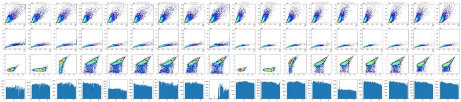
15
thinking
Well A12 (WT no treatment) shows an odd time trace, with almost no events for the first ~20 s and then a burst, which may be a clog or a delayed start. I'm making larger per-well plots to design the gates next.
16
tool call · Bash
cd /task/work; cat > p2.py <<'EOF'
import matplotlib; matplotlib.use('Agg')
import matplotlib.pyplot as plt, sys
from load import *
def asinh(x, c=150): return np.arcsinh(x/c)
wells = sys.argv[1].split(',')
fig, axes = plt.subplots(len(wells), 5, figsize=(25, 5*len(wells)))
for i,w in enumerate(wells):
r = lay[lay.well==w].iloc[0]
s, df = load(r.file)
d=df
ax=axes[i,0]; ax.hist2d(d['FSC-A'], d['SSC-A'], bins=300, range=[[0,1.05e6],[0,1.05e6]], cmap='jet', norm=matplotlib.colors.LogNorm()); ax.set_title(f"{r.well} {r['sample']} FSC-A/SSC-A")
ax=axes[i,1]; ax.hist2d(np.log10(np.clip(d['FSC-A'],1,None)), np.log10(np.clip(d['SSC-A'],1,None)), bins=300, range=[[3.5,6.1],[3,6.1]], cmap='jet', norm=matplotlib.colors.LogNorm()); ax.set_title('log FSC/SSC')
ax=axes[i,2]; ax.hist2d(d['FSC-A'], d['FSC-H'], bins=300, range=[[0,1.05e6],[0,6e5]], cmap='jet', norm=matplotlib.colors.LogNorm()); ax.set_title('FSC-A/FSC-H')
ax=axes[i,3]; ax.hist2d(asinh(d['BL1-A']), asinh(d['RL3-A']), bins=300, range=[[-2,9],[-2,9]], cmap='jet', norm=matplotlib.colors.LogNorm()); ax.set_title('asinh BL1/RL3 (c=150)')
ax=axes[i,4]; ax.hist2d(d['Time'], d['FSC-A'], bins=[200,200], range=[[0,48],[0,1.05e6]], cmap='jet', norm=matplotlib.colors.LogNorm()); ax.set_title('Time/FSC-A')
plt.tight_layout(); plt.savefig(sys.argv[2], dpi=45)
EOF
python3 p2.py A2,A4,A6,A7 d1.png17
tool output
(Bash completed with no output)
18
tool call · Read
{
"file_path": "/task/work/d1.png"
}19
tool output
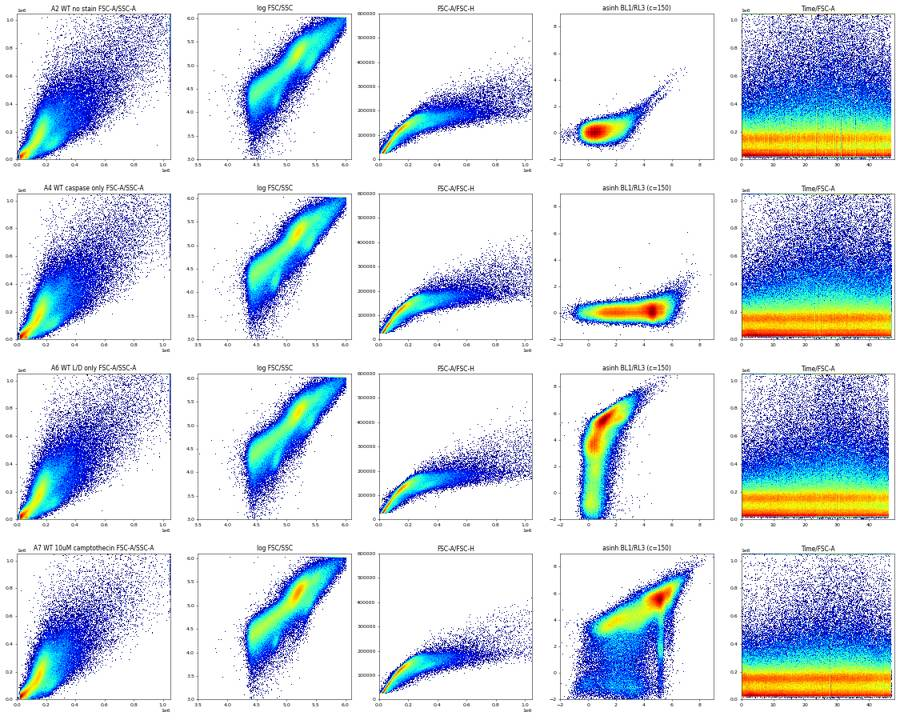
21
tool call · Bash
cd /task/work; python3 p2.py A8,A9,A10,A11,A12 d2.png; python3 p2.py B2,B4,B6,B7 d3.png; python3 p2.py B8,B9,B10,B11,B12 d4.png
22
tool output
(Bash completed with no output)
23
tool call · Read
{
"file_path": "/task/work/d2.png"
}24
tool output
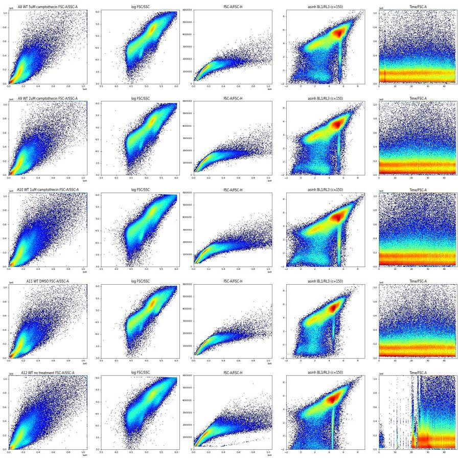
25
tool call · Read
{
"file_path": "/task/work/d3.png"
}26
tool output
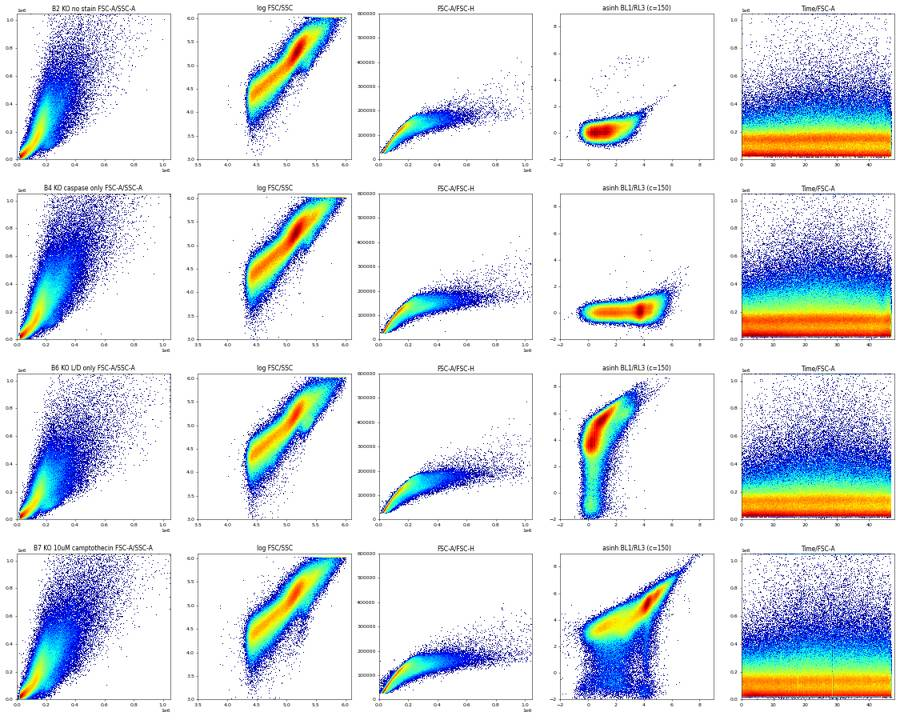
27
tool call · Read
{
"file_path": "/task/work/d4.png"
}28
tool output
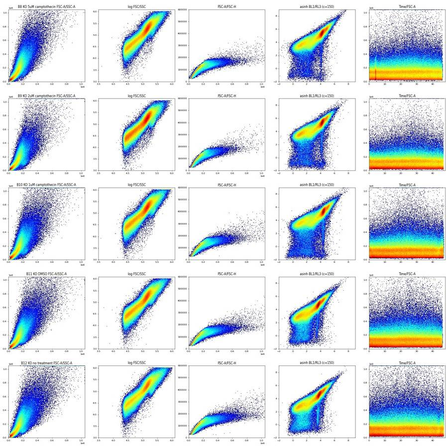
30
tool call · Bash
cd /task/work; cat > p3.py <<'EOF'
import matplotlib; matplotlib.use('Agg')
import matplotlib.pyplot as plt, sys
from load import *
def asinh(x, c=150): return np.arcsinh(x/c)
wells = sys.argv[1].split(',')
fig, axes = plt.subplots(len(wells), 4, figsize=(20, 5*len(wells)))
for i,w in enumerate(wells):
r = lay[lay.well==w].iloc[0]
s, df = load(r.file)
rl = asinh(df['RL3-A'])
cls = {'RL3neg(<1.5)': rl<1.5, 'RL3dim(2.5-4.6)': (rl>2.5)&(rl<4.6), 'RL3bright(>4.8)': rl>4.8}
for j,(k,m) in enumerate(cls.items()):
d = df[m]
ax=axes[i,j]; ax.hist2d(d['FSC-A'], d['SSC-A'], bins=250, range=[[0,1.05e6],[0,1.05e6]], cmap='jet', norm=matplotlib.colors.LogNorm()); ax.set_title(f"{w} {r['sample']} {k} {m.mean()*100:.1f}%")
ax=axes[i,3]; ax.hist(rl, bins=300, range=(-3,9), histtype='step', label='all')
m = (df['FSC-A']>80000)
ax.hist(rl[m], bins=300, range=(-3,9), histtype='step', label='FSC>80k'); ax.legend(); ax.set_yscale('log')
plt.tight_layout(); plt.savefig(sys.argv[2], dpi=45)
EOF
python3 p3.py A6,B6,A11,B7 d5.png31
tool output
(Bash completed with no output)
32
tool call · Read
{
"file_path": "/task/work/d5.png"
}33
tool output
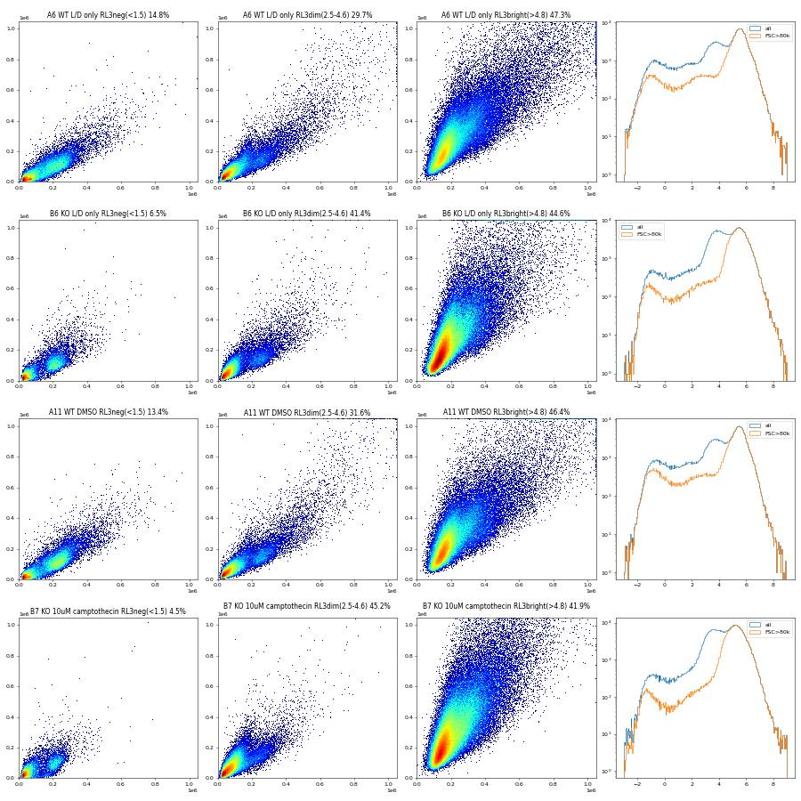
35
thinking
Zombie-negative events look like live cells, Zombie-bright ones are dead, and Zombie-dim ones are mostly debris. I'm checking a vertical streak of caspase-bright, low-Zombie events before setting the live gate.
36
tool call · Bash
cd /task/work; cat > p4.py <<'EOF'
import matplotlib; matplotlib.use('Agg')
import matplotlib.pyplot as plt, sys
from load import *
def asinh(x, c=150): return np.arcsinh(x/c)
wells = sys.argv[1].split(',')
fig, axes = plt.subplots(len(wells), 5, figsize=(25, 5*len(wells)))
for i,w in enumerate(wells):
r = lay[lay.well==w].iloc[0]
s, df = load(r.file)
rl = asinh(df['RL3-A']); bl = asinh(df['BL1-A'])
m = (df['FSC-A']>90000)&(df['FSC-A']<500000)&(df['SSC-A']<600000)
d = df[m]
ax=axes[i,0]; ax.hist2d(bl[m], rl[m], bins=250, range=[[-2,9],[-2,9]], cmap='jet', norm=matplotlib.colors.LogNorm()); ax.set_title(f"{w} {r['sample']} FSC 90-500k")
lo = m & (rl<2)
ax=axes[i,1]; ax.hist(bl[lo], bins=400, range=(-2,9)); ax.set_title('BL1 asinh, RL3<2 scatter gated'); ax.set_yscale('log')
ax=axes[i,2]; ax.hist2d(df['FSC-A'][lo], df['SSC-A'][lo], bins=200, range=[[0,1.05e6],[0,1.05e6]], cmap='jet', norm=matplotlib.colors.LogNorm()); ax.set_title('FSC/SSC RL3<2')
strk = (rl<2.5)&(np.abs(bl - np.median(bl[(rl>5)]))<0.25)
ax=axes[i,3]; ax.hist2d(df['FSC-A'][strk], df['SSC-A'][strk], bins=200, range=[[0,1.05e6],[0,1.05e6]], cmap='jet', norm=matplotlib.colors.LogNorm()); ax.set_title(f'streak-ish n={strk.sum()}')
ax=axes[i,4]; ax.hist(df['Time'][strk], bins=200); ax.set_title('streak time')
plt.tight_layout(); plt.savefig(sys.argv[2], dpi=45)
EOF
python3 p4.py A4,A11,A7,B11,B7 d6.png37
tool output
(Bash completed with no output)
38
tool call · Read
{
"file_path": "/task/work/d6.png"
}39
tool output
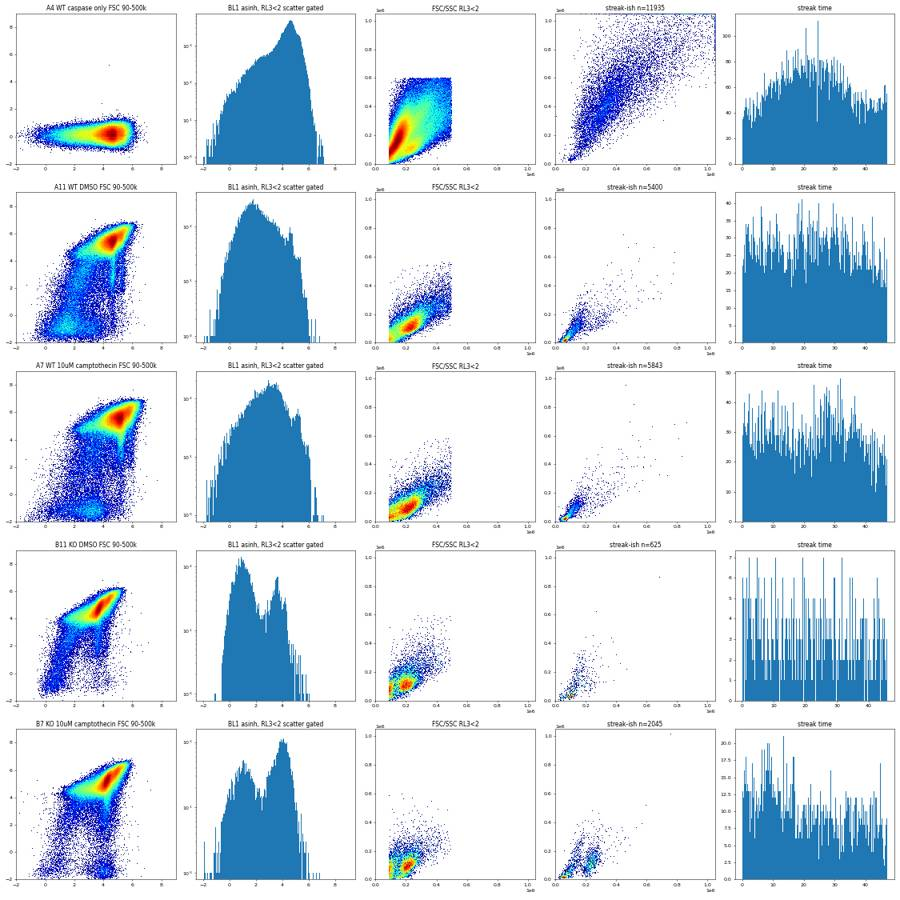
41
tool call · Bash
cd /task/work; cat > p5.py <<'EOF'
from load import *
def asinh(x, c=150): return np.arcsinh(x/c)
for w in ['A11','B7','A7']:
r = lay[lay.well==w].iloc[0]; s, df = load(r.file)
rl = asinh(df['RL3-A']); bl = asinh(df['BL1-A'])
dead = rl>5
c = np.median(bl[dead])
strk = (rl<1.5)&(np.abs(bl-c)<0.3)&(df['FSC-A']>90000)
near = (rl<1.5)&(np.abs(bl-c)>0.6)&(df['FSC-A']>90000)
print(w, 'dead BL1 med', np.median(df['BL1-A'][dead]), 'n streak', strk.sum())
v = df['BL1-A'][strk].values
print(' streak BL1 quantiles', np.percentile(v,[5,25,50,75,95]))
print(' dead BL1 quantiles', np.percentile(df['BL1-A'][dead],[5,25,50,75,95]))
u, cnt = np.unique(v, return_counts=True); print(' most common values', sorted(zip(cnt,u))[-5:])
for col in ['FSC-A','SSC-A','FSC-H','FSC-W','SSC-W','RL3-A']:
print(' ',col, 'streak med', np.median(df[col][strk]), 'other RL3neg med', np.median(df[col][near]), 'dead med', np.median(df[col][dead]))
EOF
python3 p5.py42
tool output
A11 dead BL1 med 8102.0 n streak 999 streak BL1 quantiles [ 6197. 7023. 7903. 8911.5 10456.2] dead BL1 quantiles [ 3349. 6070. 8102. 11392. 20485.6] most common values [(3, 6095.0), (3, 6910.0), (3, 7228.0), (3, 7547.0), (4, 6960.0)] FSC-A streak med 153054.0 other RL3neg med 234966.5 dead med 170686.0 SSC-A streak med 114331.0 other RL3neg med 120119.5 dead med 218817.0 FSC-H streak med 124152.0 other RL3neg med 156234.0 dead med 129422.0 FSC-W streak med 91.0 other RL3neg med 100.0 dead med 93.0 SSC-W streak med 88.0 other RL3neg med 93.0 dead med 92.0 RL3-A streak med 10.0 other RL3neg med -85.0 dead med 19345.0 B7 dead BL1 med 6488.0 n streak 1235 streak BL1 quantiles [4892. 5337. 6023. 6935.5 8328.2] dead BL1 quantiles [ 3630.55 5194. 6488. 9983. 18636.45] most common values [(3, 6786.0), (3, 6835.0), (3, 7796.0), (4, 5923.0), (4, 6504.0)] FSC-A streak med 223507.0 other RL3neg med 192197.0 dead med 176988.5 SSC-A streak med 116950.0 other RL3neg med 98034.0 dead med 256352.0 FSC-H streak med 159253.0 other RL3neg med 146713.0 dead med 124961.0 FSC-W streak med 95.0 other RL3neg med 91.0 dead med 96.0 SSC-W streak med 89.0 other RL3neg med 85.0 dead med 96.0 RL3-A streak med -161.0 other RL3neg med -125.0 dead med 18538.0 A7 dead BL1 med 12988.0 n streak 904 streak BL1 quantiles [10026.15 11519. 13169. 14782. 16794.2 ] dead BL1 quantiles [ 4394.6 9202. 12988. 18614. 34811. ] most common values [(2, 16496.0), (2, 16605.0), (2, 16690.0), (3, 14726.0), (3, 16974.0)] FSC-A streak med 139808.0 other RL3neg med 216465.0 dead med 166664.0 SSC-A streak med 106381.5 other RL3neg med 103031.5 dead med 206179.0 FSC-H streak med 111693.5 other RL3neg med 152382.5 dead med 127493.0 FSC-W streak med 90.0 other RL3neg med 96.0 dead med 92.0 SSC-W streak med 85.0 other RL3neg med 90.0 dead med 91.0 RL3-A streak med -23.0 other RL3neg med -150.0 dead med 21739.0
44
tool call · Bash
cd /task/work; cat > p6.py <<'EOF'
import matplotlib; matplotlib.use('Agg')
import matplotlib.pyplot as plt, sys
from load import *
def asinh(x, c=150): return np.arcsinh(x/c)
wells = sys.argv[1].split(',')
fig, axes = plt.subplots(len(wells), 5, figsize=(25, 5*len(wells)))
for i,w in enumerate(wells):
r = lay[lay.well==w].iloc[0]; s, df = load(r.file)
rl = asinh(df['RL3-A'])
live = rl<1.5 if r.treatment not in ('no stain','caspase only') else np.ones(len(df),bool)
ax=axes[i,0]; ax.hist2d(df['FSC-A'], df['SSC-A'], bins=250, range=[[0,6e5],[0,6e5]], cmap='jet', norm=matplotlib.colors.LogNorm()); ax.set_title(f"{w} {r['sample']} all")
ax.grid(alpha=.4)
ax=axes[i,1]; ax.hist2d(df['FSC-A'][live], df['SSC-A'][live], bins=250, range=[[0,6e5],[0,6e5]], cmap='jet', norm=matplotlib.colors.LogNorm()); ax.set_title("RL3neg"); ax.grid(alpha=.4)
m = df['FSC-A']>80000
ax=axes[i,2]; ax.hist2d(df['FSC-A'][m], df['FSC-H'][m], bins=250, range=[[0,6e5],[0,3e5]], cmap='jet', norm=matplotlib.colors.LogNorm()); ax.set_title("FSC-A/H, FSC>80k"); ax.grid(alpha=.4)
ax=axes[i,3]; ax.hist2d(df['FSC-A'][m], df['FSC-W'][m], bins=250, range=[[0,6e5],[0,300]], cmap='jet', norm=matplotlib.colors.LogNorm()); ax.set_title("FSC-A/W"); ax.grid(alpha=.4)
ax=axes[i,4]; ax.hist2d(df['SSC-A'][m], df['SSC-H'][m], bins=250, range=[[0,8e5],[0,5e5]], cmap='jet', norm=matplotlib.colors.LogNorm()); ax.set_title("SSC-A/H"); ax.grid(alpha=.4)
plt.tight_layout(); plt.savefig(sys.argv[2], dpi=45)
EOF
python3 p6.py A2,A11,B11,B6 d7.png45
tool output
(Bash completed with no output)
46
tool call · Read
{
"file_path": "/task/work/d7.png"
}47
tool output
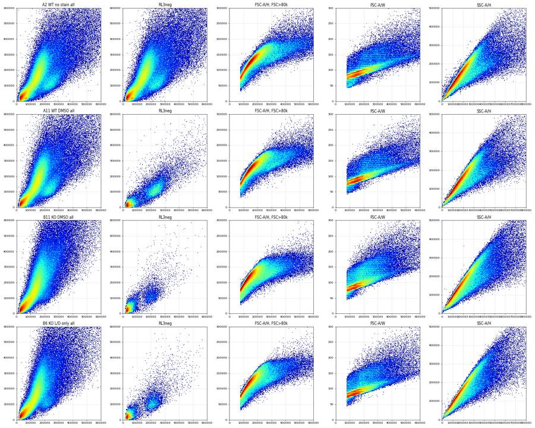
49
tool call · Bash
cd /task/work; cat > p7.py <<'EOF'
import matplotlib; matplotlib.use('Agg')
import matplotlib.pyplot as plt, sys
from load import *
def asinh(x, c=150): return np.arcsinh(x/c)
wells = sys.argv[1].split(',')
fig, axes = plt.subplots(len(wells), 4, figsize=(20, 5*len(wells)))
for i,w in enumerate(wells):
r = lay[lay.well==w].iloc[0]; s, df = load(r.file)
rl = asinh(df['RL3-A'])
m = (df['FSC-A']>90000)&(df['SSC-A']>20000)
live = (rl<1.5)&m; dead=(rl>4.8)&m
for j,(nm,mm) in enumerate([('live RL3<1.5',live),('dead RL3>4.8',dead)]):
ax=axes[i,j]; ax.hist2d(df['FSC-A'][mm], df['FSC-H'][mm], bins=200, range=[[0,8e5],[0,3e5]], cmap='jet', norm=matplotlib.colors.LogNorm()); ax.set_title(f"{w} {nm} FSC-A/H"); ax.grid(alpha=.4)
ax=axes[i,j+2]; ax.hist2d(df['SSC-A'][mm], df['SSC-H'][mm], bins=200, range=[[0,8e5],[0,5e5]], cmap='jet', norm=matplotlib.colors.LogNorm()); ax.set_title(f"{nm} SSC-A/H"); ax.grid(alpha=.4)
plt.tight_layout(); plt.savefig(sys.argv[2], dpi=45)
EOF
python3 p7.py A11,A7,B11,B7 d8.png50
tool output
(Bash completed with no output)
51
tool call · Read
{
"file_path": "/task/work/d8.png"
}52
tool output
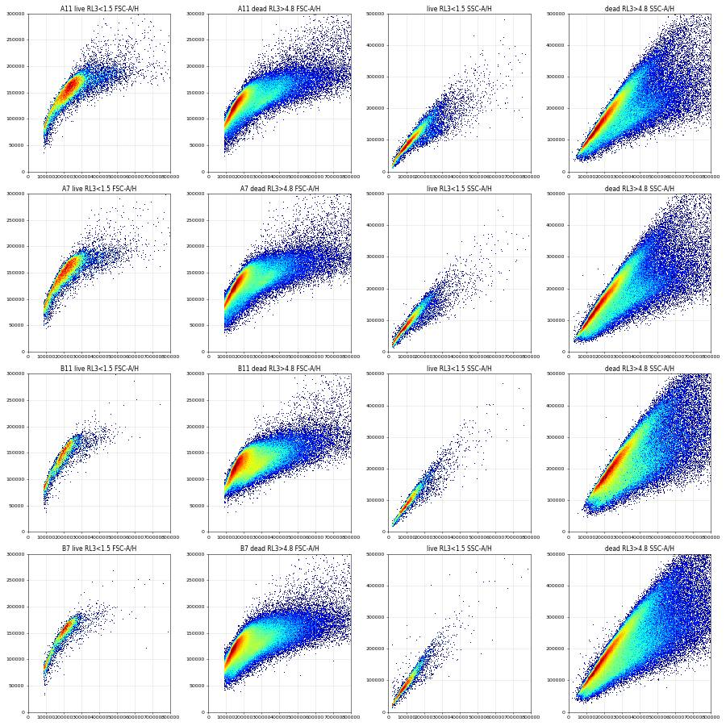
54
agent
Next I'm setting the singlet band (live cells form a tight FSC-A/FSC-H ridge, while dead cells are broader) and the Zombie/caspase thresholds, using the single-stain controls.
55
tool call · Bash
cd /task/work; cat > p8.py <<'EOF'
from load import *
def asinh(x, c=150): return np.arcsinh(x/c)
# ridge of live cells FSC-A vs FSC-H pooled
H=[];A=[]
for w in ['A7','A8','A9','A10','A11','B7','B8','B9','B10','B11','B12']:
r = lay[lay.well==w].iloc[0]; s, df = load(r.file)
rl = asinh(df['RL3-A']); m=(df['FSC-A']>80000)&(rl<1.5)&(df['SSC-A']<400000)
A.append(df['FSC-A'][m].values); H.append(df['FSC-H'][m].values)
A=np.concatenate(A);H=np.concatenate(H)
for lo in range(60000,520000,40000):
mm=(A>=lo)&(A<lo+40000)
if mm.sum()>20: print(lo, mm.sum(), np.percentile(H[mm],[1,5,25,50,75,95,99]).round(-3))
EOF
python3 p8.py56
tool output
60000 20282 [48000. 62000. 75000. 80000. 85000. 92000. 98000.] 100000 24925 [ 60000. 74000. 93000. 102000. 111000. 122000. 127000.] 140000 28725 [ 84000. 107000. 123000. 130000. 138000. 146000. 151000.] 180000 41536 [114000. 128000. 142000. 149000. 156000. 164000. 168000.] 220000 33955 [126000. 140000. 155000. 162000. 169000. 175000. 180000.] 260000 16121 [131000. 146000. 162000. 170000. 176000. 185000. 197000.] 300000 6140 [134000. 146000. 164000. 174000. 182000. 198000. 221000.] 340000 3356 [134000. 146000. 165000. 176000. 187000. 212000. 242000.] 380000 2397 [141000. 151000. 168000. 178000. 189000. 218000. 249000.] 420000 1710 [145000. 156000. 171000. 182000. 193000. 223000. 257000.] 460000 1204 [147000. 160000. 173000. 184000. 195000. 226000. 261000.] 500000 589 [152000. 160000. 177000. 187000. 198000. 232000. 260000.]
58
tool call · Bash
cd /task/work; cat > p9.py <<'EOF'
import matplotlib; matplotlib.use('Agg')
import matplotlib.pyplot as plt
from load import *
def asinh(x, c=150): return np.arcsinh(x/c)
fig, axes = plt.subplots(3, 6, figsize=(30, 14)); axes=axes.ravel()
for i,(_,r) in enumerate(lay.iterrows()):
s, df = load(r.file)
rl = asinh(df['RL3-A']); bl=asinh(df['BL1-A'])
ax=axes[i]
if r.treatment in ('no stain','caspase only'):
ax.hist(np.log10(df['FSC-A']), bins=200, range=(4.3,6.05), histtype='step', label='all')
else:
ln = rl<1.5
ax.hist(np.log10(df['FSC-A'][ln]), bins=200, range=(4.3,6.05), histtype='step', label='RL3neg')
ax.hist(np.log10(df['FSC-A'][ln&(bl>3.3)]), bins=200, range=(4.3,6.05), histtype='step', label='RL3neg BL1>3.3')
ax.hist(np.log10(df['FSC-A'][rl>4.8]), bins=200, range=(4.3,6.05), histtype='step', label='RL3 bright')
ax.axvline(np.log10(90000),color='k',ls=':'); ax.axvline(np.log10(120000),color='k',ls=':')
ax.set_yscale('log'); ax.legend(); ax.set_title(f"{r.well} {r['sample']} log10 FSC-A")
plt.tight_layout(); plt.savefig('d9.png', dpi=40)
EOF
python3 p9.py59
tool output
/usr/local/lib/python3.12/site-packages/pandas/core/arraylike.py:399: RuntimeWarning: invalid value encountered in log10 result = getattr(ufunc, method)(*inputs, **kwargs) /usr/local/lib/python3.12/site-packages/pandas/core/arraylike.py:399: RuntimeWarning: invalid value encountered in log10 result = getattr(ufunc, method)(*inputs, **kwargs) /usr/local/lib/python3.12/site-packages/pandas/core/arraylike.py:399: RuntimeWarning: invalid value encountered in log10 result = getattr(ufunc, method)(*inputs, **kwargs) /usr/local/lib/python3.12/site-packages/pandas/core/arraylike.py:399: RuntimeWarning: invalid value encountered in log10 result = getattr(ufunc, method)(*inputs, **kwargs) /usr/local/lib/python3.12/site-packages/pandas/core/arraylike.py:399: RuntimeWarning: invalid value encountered in log10 result = getattr(ufunc, method)(*inputs, **kwargs) /usr/local/lib/python3.12/site-packages/pandas/core/arraylike.py:399: RuntimeWarning: invalid value encountered in log10 result = getattr(ufunc, method)(*inputs, **kwargs) /usr/local/lib/python3.12/site-packages/pandas/core/arraylike.py:399: RuntimeWarning: invalid value encountered in log10 result = getattr(ufunc, method)(*inputs, **kwargs) /usr/local/lib/python3.12/site-packages/pandas/core/arraylike.py:399: RuntimeWarning: invalid value encountered in log10 result = getattr(ufunc, method)(*inputs, **kwargs) /usr/local/lib/python3.12/site-packages/pandas/core/arraylike.py:399: RuntimeWarning: invalid value encountered in log10 result = getattr(ufunc, method)(*inputs, **kwargs) /usr/local/lib/python3.12/site-packages/pandas/core/arraylike.py:399: RuntimeWarning: invalid value encountered in log10 result = getattr(ufunc, method)(*inputs, **kwargs) /usr/local/lib/python3.12/site-packages/pandas/core/arraylike.py:399: RuntimeWarning: invalid value encountered in log10 result = getattr(ufunc, method)(*inputs, **kwargs) /usr/local/lib/python3.12/site-packages/pandas/core/arraylike.py:399: RuntimeWarning: invalid value encountered in log10 result = getattr(ufunc, method)(*inputs, **kwargs) /usr/local/lib/python3.12/site-packages/pandas/core/arraylike.py:399: RuntimeWarning: invalid value encountered in log10 result = getattr(ufunc, method)(*inputs, **kwargs) /usr/local/lib/python3.12/site-packages/pandas/core/arraylike.py:399: RuntimeWarning: invalid value encountered in log10 result = getattr(ufunc, method)(*inputs, **kwargs) /usr/local/lib/python3.12/site-packages/pandas/core/arraylike.py:399: RuntimeWarning: invalid value encountered in log10 result = getattr(ufunc, method)(*inputs, **kwargs) /usr/local/lib/python3.12/site-packages/pandas/core/arraylike.py:399: RuntimeWarning: invalid value encountered in log10 result = getattr(ufunc, method)(*inputs, **kwargs) /usr/local/lib/python3.12/site-packages/pandas/core/arraylike.py:399: RuntimeWarning: invalid value encountered in log10 result = getattr(ufunc, method)(*inputs, **kwargs)
60
tool call · Read
{
"file_path": "/task/work/d9.png"
}61
tool output
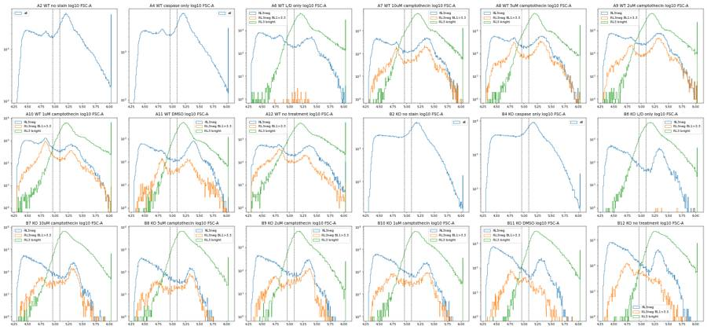
63
tool call · Bash
cd /task/work; cat > p10.py <<'EOF'
import matplotlib; matplotlib.use('Agg')
import matplotlib.pyplot as plt
from load import *
from matplotlib.path import Path
def asinh(x, c=150): return np.arcsinh(x/c)
sing = Path([(60e3,45e3),(100e3,65e3),(140e3,95e3),(180e3,118e3),(220e3,130e3),(260e3,136e3),(320e3,140e3),(320e3,250e3),(150e3,200e3),(60e3,120e3)])
def gate(df):
c = (df['FSC-A']>=100e3)&(df['FSC-A']<1.0e6)&(df['SSC-A']>=10e3)&(df['SSC-A']<1.0e6)
s = c & sing.contains_points(df[['FSC-A','FSC-H']].values)
return c, s
fig, axes = plt.subplots(3, 6, figsize=(30, 15)); axes=axes.ravel()
fig2, axes2 = plt.subplots(3, 6, figsize=(30, 15)); axes2=axes2.ravel()
for i,(_,r) in enumerate(lay.iterrows()):
s_, df = load(r.file); c,s = gate(df)
rl = asinh(df['RL3-A']); bl=asinh(df['BL1-A'])
ax=axes[i]; ax.hist2d(bl[s], rl[s], bins=250, range=[[-2,9],[-2,9]], cmap='jet', norm=matplotlib.colors.LogNorm()); ax.set_title(f"{r.well} {r['sample']} singlets n={s.sum()} ({c.sum()} cells)")
ax.axhline(2,color='k',ls=':'); ax.axvline(3.3,color='k',ls=':'); ax.grid(alpha=.3)
ax=axes2[i]; ax.hist(rl[s], bins=300, range=(-3,9), histtype='step', label='RL3 singlets');
ax.hist(bl[s&(rl<2)], bins=300, range=(-3,9), histtype='step', label='BL1 | RL3<2')
ax.hist(bl[s], bins=300, range=(-3,9), histtype='step', label='BL1 all singlets')
ax.set_yscale('log'); ax.legend(); ax.set_title(f"{r.well} {r['sample']}")
fig.tight_layout(); fig.savefig('d10.png', dpi=40); fig2.tight_layout(); fig2.savefig('d11.png', dpi=40)
EOF
python3 p10.py64
tool output
(Bash completed with no output)
65
tool call · Read
{
"file_path": "/task/work/d10.png"
}66
tool output
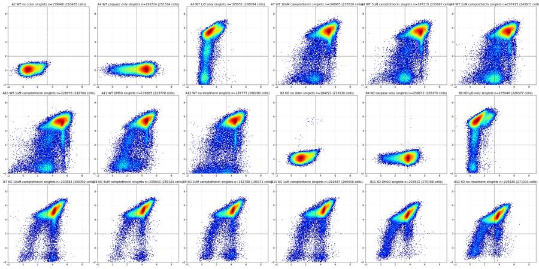
68
tool call · Read
{
"file_path": "/task/work/d11.png"
}69
tool output
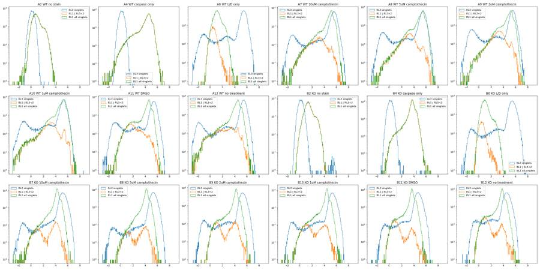
71
thinking
Debris, singlet and live-cell gates are set, and I'm now checking how the readout shifts with the caspase and Zombie cut-offs, using the L/D-only wells as reference.
72
tool call · Bash
cd /task/work; cat > p11.py <<'EOF'
from load import *
from matplotlib.path import Path
def asinh(x, c=150): return np.arcsinh(x/c)
sing = Path([(60e3,45e3),(100e3,65e3),(140e3,95e3),(180e3,118e3),(220e3,130e3),(260e3,136e3),(320e3,140e3),(320e3,250e3),(150e3,200e3),(60e3,120e3)])
rows=[]
for _,r in lay.iterrows():
s_, df = load(r.file)
c = (df['FSC-A']>=100e3)&(df['FSC-A']<1.0e6)&(df['SSC-A']>=10e3)&(df['SSC-A']<1.0e6)
s = c & sing.contains_points(df[['FSC-A','FSC-H']].values)
rl = df['RL3-A'][s].values; bl = df['BL1-A'][s].values
d = dict(well=r.well, sample=r['sample'])
for lt in [1.5,2,2.5,3]:
L = asinh(rl)<lt
d[f'live{lt}'] = L.mean()*100
L = asinh(rl)<2
for bt in [2.5,3,3.5,4]:
d[f'cp{bt}'] = (asinh(bl[L])>bt).mean()*100
d['cp_all3']=(asinh(bl)>3).mean()*100
d['bl1_p99_live'] = np.percentile(bl[L],99.5); d['bl1_p995_live']=np.percentile(bl[L],99.9)
d['rl3_p995']=np.percentile(rl,99.5)
d['nlive']=L.sum()
rows.append(d)
out=pd.DataFrame(rows); pd.set_option('display.width',250)
print(out.round(1))
EOF
python3 p11.py73
tool output
well sample live1.5 ... bl1_p995_live rl3_p995 nlive 0 A2 WT no stain 100.0 ... 1830.0 172.0 159045 1 A4 WT caspase only 100.0 ... 30533.4 175.0 193722 2 A6 WT L/D only 9.2 ... 2281.8 53359.9 19171 3 A7 WT 10uM camptothecin 7.9 ... 45237.1 61098.4 16331 4 A8 WT 5uM camptothecin 10.4 ... 50359.2 54120.7 21359 5 A9 WT 2uM camptothecin 13.5 ... 42967.8 54549.6 28882 6 A10 WT 1uM camptothecin 10.6 ... 45135.8 44452.1 27021 7 A11 WT DMSO 10.9 ... 28927.3 50300.3 21556 8 A12 WT no treatment 9.8 ... 39427.1 52318.0 20241 9 B2 KO no stain 100.0 ... 2784.3 193.0 184661 10 B4 KO caspase only 100.0 ... 14060.4 187.0 258662 11 B6 KO L/D only 4.8 ... 1311.6 63333.7 9745 12 B7 KO 10uM camptothecin 2.6 ... 30745.4 49537.7 7015 13 B8 KO 5uM camptothecin 1.7 ... 31957.9 55955.9 4003 14 B9 KO 2uM camptothecin 4.3 ... 26357.8 54882.3 8029 15 B10 KO 1uM camptothecin 3.3 ... 37373.6 55429.8 8171 16 B11 KO DMSO 2.9 ... 26615.4 31594.3 7351 17 B12 KO no treatment 4.5 ... 23769.2 26431.8 11361 [18 rows x 15 columns]
74
tool call · Bash
cd /task/work; sed -i 's/pd.set_option(.display.width.,250)/pd.set_option("display.width",250); pd.set_option("display.max_columns",30)/' p11.py; python3 p11.py75
tool output
well sample live1.5 live2 live2.5 live3 cp2.5 cp3 cp3.5 cp4 cp_all3 bl1_p99_live bl1_p995_live rl3_p995 nlive 0 A2 WT no stain 100.0 100.0 100.0 100.0 2.4 0.3 0.0 0.0 0.3 1327.0 1830.0 172.0 159045 1 A4 WT caspase only 100.0 100.0 100.0 100.0 91.2 87.7 82.6 71.4 87.7 22425.8 30533.4 175.0 193722 2 A6 WT L/D only 9.2 10.4 11.8 13.5 0.3 0.2 0.1 0.0 0.3 656.3 2281.8 53359.9 19171 3 A7 WT 10uM camptothecin 7.9 8.6 9.5 10.6 63.0 48.5 30.8 16.8 93.5 28757.9 45237.1 61098.4 16331 4 A8 WT 5uM camptothecin 10.4 11.4 12.6 13.9 74.4 58.8 37.5 19.8 93.8 38183.1 50359.2 54120.7 21359 5 A9 WT 2uM camptothecin 13.5 14.6 15.9 17.5 74.2 58.7 37.6 19.4 92.0 31480.4 42967.8 54549.6 28882 6 A10 WT 1uM camptothecin 10.6 11.8 13.4 15.1 68.8 54.2 35.7 20.6 92.4 37510.8 45135.8 44452.1 27021 7 A11 WT DMSO 10.9 12.1 13.4 15.0 33.5 24.5 16.1 9.9 86.6 17815.4 28927.3 50300.3 21556 8 A12 WT no treatment 9.8 10.8 12.1 13.6 51.2 42.1 30.6 19.1 90.1 23930.6 39427.1 52318.0 20241 9 B2 KO no stain 100.0 100.0 100.0 100.0 7.9 2.2 0.2 0.0 2.2 2095.0 2784.3 193.0 184661 10 B4 KO caspase only 100.0 100.0 100.0 100.0 95.0 91.0 75.7 23.9 91.0 10713.0 14060.4 187.0 258662 11 B6 KO L/D only 4.8 5.6 6.5 7.6 0.4 0.0 0.0 0.0 0.8 818.6 1311.6 63333.7 9745 12 B7 KO 10uM camptothecin 2.6 3.0 3.6 4.3 62.3 59.0 51.2 31.3 94.5 17247.2 30745.4 49537.7 7015 13 B8 KO 5uM camptothecin 1.7 1.9 2.3 2.8 60.8 55.7 46.5 28.1 94.6 18941.7 31957.9 55955.9 4003 14 B9 KO 2uM camptothecin 4.3 4.9 5.7 6.6 50.6 47.0 38.9 24.2 91.9 19213.8 26357.8 54882.3 8029 15 B10 KO 1uM camptothecin 3.3 3.9 4.6 5.4 46.8 42.1 33.9 22.2 93.0 20625.9 37373.6 55429.8 8171 16 B11 KO DMSO 2.9 3.6 4.5 5.4 22.8 20.3 14.8 6.0 89.1 14326.0 26615.4 31594.3 7351 17 B12 KO no treatment 4.5 5.5 6.6 7.7 24.2 21.1 15.9 6.0 87.8 13037.2 23769.2 26431.8 11361
77
thinking
Live singlets are very low (about 10% WT, 5% KO), and camptothecin about doubles the caspase-positive share among live cells in both genotypes. Next I'm checking the A12 flow disruption with time-binned stats.
78
tool call · Bash
cd /task/work; cat > p12.py <<'EOF'
from load import *
from matplotlib.path import Path
def asinh(x, c=150): return np.arcsinh(x/c)
sing = Path([(60e3,45e3),(100e3,65e3),(140e3,95e3),(180e3,118e3),(220e3,130e3),(260e3,136e3),(320e3,140e3),(320e3,250e3),(150e3,200e3),(60e3,120e3)])
import sys
for w in sys.argv[1].split(','):
r = lay[lay.well==w].iloc[0]; s_, df = load(r.file)
c = (df['FSC-A']>=100e3)&(df['FSC-A']<1.0e6)&(df['SSC-A']>=10e3)&(df['SSC-A']<1.0e6)
s = c & sing.contains_points(df[['FSC-A','FSC-H']].values)
L = s & (df['RL3-A']<544); P = L & (df['BL1-A']>1500)
t = df['Time'].values
print(w, r['sample'], 'Time range', t.min(), t.max())
edges = np.arange(0, 50, 4)
for a,b in zip(edges[:-1], edges[1:]):
m = (t>=a)&(t<b)
if m.sum()==0: print(f' {a:4.0f}-{b:<4.0f} n=0'); continue
print(f' {a:4.0f}-{b:<4.0f} n={m.sum():6d} rate={m.sum()/(b-a):7.0f}/s cells%={c[m].mean()*100:5.1f} sing%cells={s[m].sum()/max(c[m].sum(),1)*100:5.1f} live%sing={L[m].sum()/max(s[m].sum(),1)*100:5.1f} casp%live={P[m].sum()/max(L[m].sum(),1)*100:5.1f} nlive={L[m].sum():5d} medFSC={np.median(df["FSC-A"][m]):.0f}')
EOF
python3 p12.py A12,A11,A8,B879
tool output
A12 WT no treatment Time range 0.113 46.926
0-4 n= 1084 rate= 271/s cells%= 56.9 sing%cells= 94.5 live%sing= 9.9 casp%live= 48.3 nlive= 58 medFSC=123546
4-8 n= 102 rate= 26/s cells%= 16.7 sing%cells= 11.8 live%sing=100.0 casp%live= 0.0 nlive= 2 medFSC=375761
8-12 n= 1307 rate= 327/s cells%= 42.0 sing%cells= 70.3 live%sing= 22.8 casp%live= 72.7 nlive= 88 medFSC=96565
12-16 n= 139 rate= 35/s cells%= 21.6 sing%cells= 0.0 live%sing= 0.0 casp%live= 0.0 nlive= 0 medFSC=290419
16-20 n= 192 rate= 48/s cells%= 24.5 sing%cells= 2.1 live%sing=100.0 casp%live= 0.0 nlive= 1 medFSC=360634
20-24 n= 42991 rate= 10748/s cells%= 60.7 sing%cells= 75.0 live%sing= 11.4 casp%live= 39.0 nlive= 2228 medFSC=130012
24-28 n= 83684 rate= 20921/s cells%= 67.7 sing%cells= 73.1 live%sing= 13.2 casp%live= 37.8 nlive= 5472 medFSC=144968
28-32 n= 81224 rate= 20306/s cells%= 63.4 sing%cells= 72.4 live%sing= 11.0 casp%live= 43.4 nlive= 4113 medFSC=140712
32-36 n= 53384 rate= 13346/s cells%= 63.2 sing%cells= 70.6 live%sing= 9.4 casp%live= 45.1 nlive= 2234 medFSC=148453
36-40 n= 51393 rate= 12848/s cells%= 63.9 sing%cells= 70.3 live%sing= 9.6 casp%live= 44.4 nlive= 2207 medFSC=150543
40-44 n= 53452 rate= 13363/s cells%= 63.1 sing%cells= 71.1 live%sing= 9.4 casp%live= 44.3 nlive= 2253 medFSC=149606
44-48 n= 40122 rate= 10030/s cells%= 61.0 sing%cells= 72.3 live%sing= 8.9 casp%live= 45.5 nlive= 1579 medFSC=140600
A11 WT DMSO Time range 0.014 47.085
0-4 n= 32967 rate= 8242/s cells%= 54.6 sing%cells= 85.1 live%sing= 12.0 casp%live= 25.3 nlive= 1842 medFSC=116290
4-8 n= 32850 rate= 8212/s cells%= 56.1 sing%cells= 83.4 live%sing= 12.1 casp%live= 24.3 nlive= 1865 medFSC=119902
8-12 n= 33530 rate= 8382/s cells%= 56.8 sing%cells= 82.3 live%sing= 12.1 casp%live= 25.3 nlive= 1901 medFSC=122332
12-16 n= 32537 rate= 8134/s cells%= 56.9 sing%cells= 79.1 live%sing= 11.8 casp%live= 23.8 nlive= 1731 medFSC=124112
16-20 n= 31864 rate= 7966/s cells%= 59.5 sing%cells= 77.3 live%sing= 11.3 casp%live= 25.1 nlive= 1654 medFSC=131413
20-24 n= 33013 rate= 8253/s cells%= 61.3 sing%cells= 78.1 live%sing= 11.8 casp%live= 25.1 nlive= 1866 medFSC=135825
24-28 n= 33412 rate= 8353/s cells%= 62.5 sing%cells= 77.8 live%sing= 11.9 casp%live= 25.9 nlive= 1937 medFSC=139005
28-32 n= 33035 rate= 8259/s cells%= 61.6 sing%cells= 79.0 live%sing= 12.3 casp%live= 23.4 nlive= 1973 medFSC=137438
32-36 n= 31750 rate= 7938/s cells%= 62.4 sing%cells= 78.7 live%sing= 12.4 casp%live= 23.4 nlive= 1926 medFSC=140378
36-40 n= 30786 rate= 7696/s cells%= 61.0 sing%cells= 78.9 live%sing= 12.1 casp%live= 23.9 nlive= 1794 medFSC=136498
40-44 n= 29302 rate= 7326/s cells%= 59.9 sing%cells= 79.0 live%sing= 12.3 casp%live= 22.7 nlive= 1701 medFSC=133211
44-48 n= 22174 rate= 5544/s cells%= 59.7 sing%cells= 79.8 live%sing= 12.9 casp%live= 25.9 nlive= 1361 medFSC=131684
A8 WT 5uM camptothecin Time range 0.014 46.891
0-4 n= 38653 rate= 9663/s cells%= 57.4 sing%cells= 85.4 live%sing= 11.7 casp%live= 58.1 nlive= 2216 medFSC=123334
4-8 n= 34433 rate= 8608/s cells%= 56.7 sing%cells= 84.2 live%sing= 12.5 casp%live= 59.1 nlive= 2061 medFSC=122054
8-12 n= 34128 rate= 8532/s cells%= 58.1 sing%cells= 82.9 live%sing= 11.9 casp%live= 59.6 nlive= 1951 medFSC=125439
12-16 n= 34083 rate= 8521/s cells%= 59.4 sing%cells= 81.7 live%sing= 11.8 casp%live= 59.3 nlive= 1953 medFSC=128861
16-20 n= 34968 rate= 8742/s cells%= 60.5 sing%cells= 80.7 live%sing= 11.7 casp%live= 58.0 nlive= 2005 medFSC=132636
20-24 n= 34436 rate= 8609/s cells%= 61.6 sing%cells= 79.5 live%sing= 11.2 casp%live= 58.3 nlive= 1898 medFSC=135864
24-28 n= 34381 rate= 8595/s cells%= 62.2 sing%cells= 79.8 live%sing= 11.7 casp%live= 56.8 nlive= 1996 medFSC=138529
28-32 n= 33150 rate= 8288/s cells%= 62.1 sing%cells= 79.8 live%sing= 10.9 casp%live= 59.1 nlive= 1794 medFSC=138756
32-36 n= 30576 rate= 7644/s cells%= 61.4 sing%cells= 79.0 live%sing= 10.1 casp%live= 59.4 nlive= 1491 medFSC=137378
36-40 n= 29258 rate= 7314/s cells%= 61.3 sing%cells= 80.5 live%sing= 10.6 casp%live= 59.4 nlive= 1526 medFSC=135398
40-44 n= 27400 rate= 6850/s cells%= 60.3 sing%cells= 79.4 live%sing= 11.3 casp%live= 62.5 nlive= 1482 medFSC=133372
44-48 n= 19526 rate= 4882/s cells%= 56.4 sing%cells= 81.8 live%sing= 10.8 casp%live= 57.3 nlive= 976 medFSC=122828
B8 KO 5uM camptothecin Time range 0.014 46.105000000000004
0-4 n= 46673 rate= 11668/s cells%= 48.9 sing%cells= 82.5 live%sing= 2.2 casp%live= 54.4 nlive= 408 medFSC=98142
4-8 n= 48882 rate= 12220/s cells%= 49.7 sing%cells= 82.6 live%sing= 1.9 casp%live= 56.9 nlive= 378 medFSC=100616
8-12 n= 44819 rate= 11205/s cells%= 49.8 sing%cells= 80.9 live%sing= 2.0 casp%live= 50.3 nlive= 364 medFSC=100812
12-16 n= 42744 rate= 10686/s cells%= 51.1 sing%cells= 79.2 live%sing= 2.1 casp%live= 55.9 nlive= 358 medFSC=104966
16-20 n= 43305 rate= 10826/s cells%= 52.8 sing%cells= 77.7 live%sing= 1.9 casp%live= 55.3 nlive= 338 medFSC=109703
20-24 n= 43184 rate= 10796/s cells%= 54.3 sing%cells= 77.8 live%sing= 2.0 casp%live= 56.5 nlive= 372 medFSC=113940
24-28 n= 43410 rate= 10852/s cells%= 55.3 sing%cells= 77.1 live%sing= 2.2 casp%live= 55.4 nlive= 401 medFSC=117384
28-32 n= 43371 rate= 10843/s cells%= 55.5 sing%cells= 78.4 live%sing= 1.9 casp%live= 58.7 nlive= 356 medFSC=118084
32-36 n= 41011 rate= 10253/s cells%= 54.6 sing%cells= 78.5 live%sing= 1.8 casp%live= 54.2 nlive= 312 medFSC=115174
36-40 n= 39616 rate= 9904/s cells%= 53.7 sing%cells= 79.2 live%sing= 1.7 casp%live= 57.1 nlive= 289 medFSC=112866
40-44 n= 37593 rate= 9398/s cells%= 53.5 sing%cells= 78.3 live%sing= 1.8 casp%live= 58.6 nlive= 280 me
… [135 more characters not shown]81
tool call · Bash
cd /task/work; cat > p13.py <<'EOF'
from load import *
rows=[]
for _,r in lay.iterrows():
s_, df = load(r.file); t=df['Time'].values
h,_ = np.histogram(t, bins=np.arange(0,47,1.0))
med = np.median(h)
rows.append(dict(well=r.well, n=len(t), dur=t.max(), med_rate=med, min_rate=h.min(), max_rate=h.max(), min_ratio=h.min()/med, max_ratio=h.max()/med, n_low_bins=(h<0.5*med).sum(), n_high_bins=(h>1.5*med).sum(), first5_vs_last5=h[:5].mean()/h[-5:].mean()))
out=pd.DataFrame(rows); pd.set_option('display.width',250); print(out.round(2))
EOF
python3 p13.py82
tool output
well n dur ... n_low_bins n_high_bins first5_vs_last5 0 A2 365736 47.02 ... 0 0 1.18 1 A4 440820 47.09 ... 0 0 1.07 2 A6 412724 46.08 ... 0 0 1.17 3 A7 395514 47.05 ... 0 0 1.22 4 A8 384992 46.89 ... 0 0 1.41 5 A9 428254 47.20 ... 0 0 1.26 6 A10 552590 47.17 ... 0 0 1.33 7 A11 377220 47.08 ... 0 0 1.12 8 A12 409074 46.93 ... 21 7 0.02 9 B2 392795 47.08 ... 0 0 1.01 10 B4 605670 47.09 ... 0 0 1.14 11 B6 457465 47.04 ... 0 0 1.06 12 B7 612174 47.10 ... 0 0 1.13 13 B8 493435 46.10 ... 0 0 1.34 14 B9 425772 47.03 ... 0 0 1.22 15 B10 539106 47.06 ... 0 0 1.16 16 B11 561171 46.10 ... 0 0 1.19 17 B12 538223 47.20 ... 0 0 1.20 [18 rows x 11 columns]
83
tool call · Bash
cd /task/work; python3 -c "
import pandas as pd
exec(open('p13.py').read().replace('print(out.round(2))','print(out.round(2).to_string())'))
"84
tool output
well n dur med_rate min_rate max_rate min_ratio max_ratio n_low_bins n_high_bins first5_vs_last5 0 A2 365736 47.02 7952.5 6524 8559 0.82 1.08 0 0 1.18 1 A4 440820 47.09 9495.5 8227 10043 0.87 1.06 0 0 1.07 2 A6 412724 46.08 9116.0 7515 9741 0.82 1.07 0 0 1.17 3 A7 395514 47.05 8537.0 7127 9212 0.83 1.08 0 0 1.22 4 A8 384992 46.89 8494.0 6222 12591 0.73 1.48 0 0 1.41 5 A9 428254 47.20 9134.5 7638 10328 0.84 1.13 0 0 1.26 6 A10 552590 47.17 11839.0 9391 13883 0.79 1.17 0 0 1.33 7 A11 377220 47.08 8140.5 7057 8473 0.87 1.04 0 0 1.12 8 A12 409074 46.93 12400.0 0 22923 0.00 1.85 21 7 0.02 9 B2 392795 47.08 8382.5 7126 8910 0.85 1.06 0 0 1.01 10 B4 605670 47.09 13170.5 10957 13619 0.83 1.03 0 0 1.14 11 B6 457465 47.04 9902.5 8578 10556 0.87 1.07 0 0 1.06 12 B7 612174 47.10 13009.5 11806 14304 0.91 1.10 0 0 1.13 13 B8 493435 46.10 10816.0 8704 15521 0.80 1.44 0 0 1.34 14 B9 425772 47.03 9334.0 7483 9932 0.80 1.06 0 0 1.22 15 B10 539106 47.06 11644.5 9447 12446 0.81 1.07 0 0 1.16 16 B11 561171 46.10 12415.0 10242 13143 0.82 1.06 0 0 1.19 17 B12 538223 47.20 11435.0 9237 12807 0.81 1.12 0 0 1.20
86
thinking
Only well A12 shows a flow problem, with 21 of 46 bins under half the median rate and some at zero, looking like a clog that cleared after about 20 s. I'm now checking the caspase intensity distributions to set the positivity threshold.
87
tool call · Bash
cd /task/work; cat > p14.py <<'EOF'
import matplotlib; matplotlib.use('Agg')
import matplotlib.pyplot as plt
from load import *
from matplotlib.path import Path
def asinh(x, c=150): return np.arcsinh(x/c)
sing = Path([(60e3,45e3),(100e3,65e3),(140e3,95e3),(180e3,118e3),(220e3,130e3),(260e3,136e3),(320e3,140e3),(320e3,250e3),(150e3,200e3),(60e3,120e3)])
fig, axes = plt.subplots(2, 3, figsize=(24, 12))
for gi,g in enumerate(['WT','KO']):
for _,r in lay[lay.genotype==g].iterrows():
if r.treatment in ('no stain','caspase only'): continue
s_, df = load(r.file)
c = (df['FSC-A']>=100e3)&(df['FSC-A']<1.0e6)&(df['SSC-A']>=10e3)&(df['SSC-A']<1.0e6)
s = c & sing.contains_points(df[['FSC-A','FSC-H']].values)
L = s & (df['RL3-A']<500)
b = asinh(df['BL1-A'][L])
ax = axes[gi,0]; ax.hist(b, bins=200, range=(-2,8), histtype='step', density=True, label=f"{r.well} {r.treatment}", lw=2 if r.treatment in ('DMSO','10uM camptothecin','L/D only') else 1)
ax = axes[gi,1]; d=df[L];
if r.treatment in ('DMSO','10uM camptothecin'):
ax.scatter(asinh(d['BL1-A']), d['SSC-A'], s=1, alpha=.3, label=r.treatment)
if r.treatment=='10uM camptothecin':
axes[gi,2].hist2d(asinh(d['BL1-A']), d['FSC-A'], bins=150, range=[[-2,8],[0,4e5]], cmap='jet', norm=matplotlib.colors.LogNorm()); axes[gi,2].set_title(f'{g} 10uM live BL1 vs FSC')
axes[gi,0].axvline(asinh(1500),color='k',ls=':'); axes[gi,0].legend(); axes[gi,0].set_title(f'{g} live singlets BL1 (asinh/150)')
axes[gi,1].legend(markerscale=10); axes[gi,1].set_ylim(0,4e5); axes[gi,1].axvline(asinh(1500),color='k',ls=':')
plt.tight_layout(); plt.savefig('d12.png', dpi=45)
EOF
python3 p14.py88
tool output
(Bash completed with no output)
89
tool call · Read
{
"file_path": "/task/work/d12.png"
}90
tool output
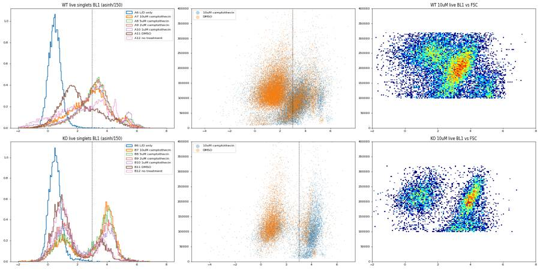
92
tool call · Bash
cd /task/work; cat > p15.py <<'EOF'
from load import *
from matplotlib.path import Path
sing = Path([(60e3,45e3),(100e3,65e3),(140e3,95e3),(180e3,118e3),(220e3,130e3),(260e3,136e3),(320e3,140e3),(320e3,250e3),(150e3,200e3),(60e3,120e3)])
rows=[]
for _,r in lay.iterrows():
if r.treatment in ('no stain','caspase only'): continue
s_, df = load(r.file)
c = (df['FSC-A']>=100e3)&(df['FSC-A']<1.0e6)&(df['SSC-A']>=10e3)&(df['SSC-A']<1.0e6)
s = c & sing.contains_points(df[['FSC-A','FSC-H']].values)
d=dict(well=r.well, s=r['sample'])
for lt in [300,500,800]:
L = s & (df['RL3-A']<lt); d[f'live<{lt}']=L.sum()/s.sum()*100
L = s & (df['RL3-A']<500)
for bt in [800,1000,1200,1500,2000,3000]:
d[f'c>{bt}'] = (df['BL1-A'][L]>bt).mean()*100
rows.append(d)
print(pd.DataFrame(rows).round(2).to_string())
EOF
python3 p15.py93
tool output
well s live<300 live<500 live<800 c>800 c>1000 c>1200 c>1500 c>2000 c>3000 0 A6 WT L/D only 9.12 10.14 11.40 0.36 0.27 0.21 0.18 0.12 0.07 1 A7 WT 10uM camptothecin 7.82 8.50 9.30 65.83 60.46 55.61 48.36 38.08 24.49 2 A8 WT 5uM camptothecin 10.32 11.23 12.26 77.02 71.79 66.49 58.73 46.85 29.60 3 A9 WT 2uM camptothecin 13.43 14.44 15.60 76.89 71.58 66.38 58.66 46.81 29.90 4 A10 WT 1uM camptothecin 10.52 11.63 12.96 71.48 65.88 60.84 53.91 43.49 28.71 5 A11 WT DMSO 10.79 11.86 13.06 35.69 31.47 28.17 24.23 19.31 13.11 6 A12 WT no treatment 9.66 10.58 11.74 53.10 49.29 46.07 41.88 35.69 25.59 7 B6 KO L/D only 4.76 5.42 6.20 0.52 0.28 0.13 0.04 0.04 0.01 8 B7 KO 10uM camptothecin 2.56 2.96 3.44 62.92 62.02 61.19 59.05 55.33 45.68 9 B8 KO 5uM camptothecin 1.63 1.90 2.22 61.70 60.27 58.73 55.94 51.69 41.09 10 B9 KO 2uM camptothecin 4.22 4.81 5.50 51.33 50.30 49.10 47.16 42.84 34.52 11 B10 KO 1uM camptothecin 3.28 3.78 4.38 47.81 45.99 44.40 42.09 37.70 29.93 12 B11 KO DMSO 2.80 3.47 4.25 22.59 21.64 20.92 19.63 17.41 10.35 13 B12 KO no treatment 4.35 5.34 6.36 23.91 22.88 21.76 20.37 17.80 11.60
95
thinking
I'm setting the caspase cutoff at BL1-A ≥ 1,000, which keeps the L/D-only wells at or under 0.3%; KO barely shifts with it, WT moves a bit, and I'll report that. Building the FlowKit gating next.
96
tool call · Bash
cd /task/work; python3 -c " import flowkit as fk, inspect print(fk.__version__) print(inspect.signature(fk.Dimension.__init__)) print(inspect.signature(fk.gates.RectangleGate.__init__)) print(inspect.signature(fk.gates.PolygonGate.__init__)) print(inspect.signature(fk.GatingStrategy.add_gate)) print(inspect.signature(fk.export_gatingml)) "
97
tool output
1.2.3 (self, dimension_id, compensation_ref='uncompensated', transformation_ref=None, range_min=None, range_max=None) (self, gate_name, dimensions, use_complement=False) (self, gate_name, dimensions, vertices, use_complement=False) (self, gate, gate_path, sample_id=None) (gating_strategy, file_handle, sample_id=None)
98
tool call · Bash
cd /task/work; mkdir -p /task/outputs; cat > build_gates.py <<'EOF'
import flowkit as fk
D = fk.Dimension
SING_VERTS = [(90e3,55e3),(140e3,92e3),(180e3,115e3),(220e3,128e3),(260e3,135e3),(320e3,140e3),(320e3,250e3),(150e3,200e3),(90e3,130e3)]
LIVE_MAX = 500.0 # RL3-A (Zombie NIR) upper limit for live cells
CASP_MIN = 1000.0 # BL1-A (CellEvent Caspase-3/7) lower limit for caspase+
def build():
g = fk.GatingStrategy()
cells = fk.gates.RectangleGate('Cells', [D('FSC-A', 'uncompensated', None, range_min=100000.0, range_max=1000000.0),
D('SSC-A', 'uncompensated', None, range_min=5000.0, range_max=1000000.0)])
g.add_gate(cells, ('root',))
sing = fk.gates.PolygonGate('Singlets', [D('FSC-A','uncompensated',None), D('FSC-H','uncompensated',None)], [list(v) for v in SING_VERTS])
g.add_gate(sing, ('root','Cells'))
live = fk.gates.RectangleGate('Live', [D('RL3-A','uncompensated',None, range_min=None, range_max=LIVE_MAX)])
g.add_gate(live, ('root','Cells','Singlets'))
casp = fk.gates.RectangleGate('Casp_pos', [D('BL1-A','uncompensated',None, range_min=CASP_MIN, range_max=None)])
g.add_gate(casp, ('root','Cells','Singlets','Live'))
return g
if __name__ == '__main__':
g = build()
with open('/task/outputs/gates.xml','wb') as fh:
fk.export_gatingml(g, fh)
g2 = fk.parse_gating_xml('/task/outputs/gates.xml')
print(g2.get_gate_ids())
EOF
python3 build_gates.py; head -c 3000 /task/outputs/gates.xml99
tool output
[('Cells', ('root',)), ('Singlets', ('root', 'Cells')), ('Live', ('root', 'Cells', 'Singlets')), ('Casp_pos', ('root', 'Cells', 'Singlets', 'Live'))]
<?xml version='1.0' encoding='UTF-8'?>
<gating:Gating-ML xmlns:gating="http://www.isac-net.org/std/Gating-ML/v2.0/gating" xmlns:data-type="http://www.isac-net.org/std/Gating-ML/v2.0/datatypes" xmlns:transforms="http://www.isac-net.org/std/Gating-ML/v2.0/transformations">
<gating:RectangleGate gating:id="Cells">
<gating:dimension gating:compensation-ref="uncompensated" gating:min="100000.0" gating:max="1000000.0">
<data-type:fcs-dimension data-type:name="FSC-A"/>
</gating:dimension>
<gating:dimension gating:compensation-ref="uncompensated" gating:min="5000.0" gating:max="1000000.0">
<data-type:fcs-dimension data-type:name="SSC-A"/>
</gating:dimension>
</gating:RectangleGate>
<gating:PolygonGate gating:id="Singlets" gating:parent_id="Cells">
<gating:dimension gating:compensation-ref="uncompensated">
<data-type:fcs-dimension data-type:name="FSC-A"/>
</gating:dimension>
<gating:dimension gating:compensation-ref="uncompensated">
<data-type:fcs-dimension data-type:name="FSC-H"/>
</gating:dimension>
<gating:vertex>
<gating:coordinate data-type:value="90000.0"/>
<gating:coordinate data-type:value="55000.0"/>
</gating:vertex>
<gating:vertex>
<gating:coordinate data-type:value="140000.0"/>
<gating:coordinate data-type:value="92000.0"/>
</gating:vertex>
<gating:vertex>
<gating:coordinate data-type:value="180000.0"/>
<gating:coordinate data-type:value="115000.0"/>
</gating:vertex>
<gating:vertex>
<gating:coordinate data-type:value="220000.0"/>
<gating:coordinate data-type:value="128000.0"/>
</gating:vertex>
<gating:vertex>
<gating:coordinate data-type:value="260000.0"/>
<gating:coordinate data-type:value="135000.0"/>
</gating:vertex>
<gating:vertex>
<gating:coordinate data-type:value="320000.0"/>
<gating:coordinate data-type:value="140000.0"/>
</gating:vertex>
<gating:vertex>
<gating:coordinate data-type:value="320000.0"/>
<gating:coordinate data-type:value="250000.0"/>
</gating:vertex>
<gating:vertex>
<gating:coordinate data-type:value="150000.0"/>
<gating:coordinate data-type:value="200000.0"/>
</gating:vertex>
<gating:vertex>
<gating:coordinate data-type:value="90000.0"/>
<gating:coordinate data-type:value="130000.0"/>
</gating:vertex>
</gating:PolygonGate>
<gating:RectangleGate gating:id="Live" gating:parent_id="Singlets">
<gating:dimension gating:compensation-ref="uncompensated" gating:max="500.0">
<data-type:fcs-dimension data-type:name="RL3-A"/>
</gating:dimension>
</gating:RectangleGate>
<gating:RectangleGate gating:id="Casp_pos" gating:parent_id="Live">
<gating:dimension gating:compensation-ref="uncompensated" gating:min="1000.0">
<data-type:fcs-dimension data-type:name="BL1-A"/>
</gating:dimension>
</gating:RectangleGate>
</gating:Gating-ML>101
tool call · Bash
cd /task/work; cat > counts.py <<'EOF'
import flowkit as fk, pandas as pd, numpy as np
lay = pd.read_csv('/task/inputs/plate_layout.csv')
g = fk.parse_gating_xml('/task/outputs/gates.xml')
ROLE = {'Cells':'cells','Singlets':'singlets','Live':'live','Casp_pos':'marker_positive'}
rows=[]
for _,r in lay.iterrows():
s = fk.Sample('/task/inputs/raw/'+r.file)
res = g.gate_sample(s)
rep = res.report
n_all = s.event_count
rows.append(dict(file=r.file, well=r.well, population='all_events', role='other', parent='none', count=int(n_all), pct_of_parent=''))
for gid, path in g.get_gate_ids():
cnt = int(res.get_gate_count(gid, path))
par = path[-1]
pc = n_all if par=='root' else int(res.get_gate_count(par, path[:-1]))
rows.append(dict(file=r.file, well=r.well, population=gid, role=ROLE.get(gid,'other'), parent='all_events' if par=='root' else par, count=cnt, pct_of_parent=round(100*cnt/pc, 4) if pc>0 else ''))
out = pd.DataFrame(rows, columns=['file','well','population','role','parent','count','pct_of_parent'])
out.to_csv('/task/outputs/counts.csv', index=False)
print(out.to_string())
EOF
python3 counts.py102
tool output
file well population role parent count pct_of_parent 0 Caspase_WT_KO_optimization_caspase_Group_A2.fcs A2 all_events other none 365736 1 Caspase_WT_KO_optimization_caspase_Group_A2.fcs A2 Cells cells all_events 210552 57.5694 2 Caspase_WT_KO_optimization_caspase_Group_A2.fcs A2 Singlets singlets Cells 160980 76.4562 3 Caspase_WT_KO_optimization_caspase_Group_A2.fcs A2 Live live Singlets 160977 99.9981 4 Caspase_WT_KO_optimization_caspase_Group_A2.fcs A2 Casp_pos marker_positive Live 2744 1.7046 5 Caspase_WT_KO_optimization_caspase_Group_A4.fcs A4 all_events other none 440820 6 Caspase_WT_KO_optimization_caspase_Group_A4.fcs A4 Cells cells all_events 251603 57.0761 7 Caspase_WT_KO_optimization_caspase_Group_A4.fcs A4 Singlets singlets Cells 196355 78.0416 8 Caspase_WT_KO_optimization_caspase_Group_A4.fcs A4 Live live Singlets 196351 99.998 9 Caspase_WT_KO_optimization_caspase_Group_A4.fcs A4 Casp_pos marker_positive Live 177820 90.5623 10 Caspase_WT_KO_optimization_caspase_Group_A6.fcs A6 all_events other none 412724 11 Caspase_WT_KO_optimization_caspase_Group_A6.fcs A6 Cells cells all_events 236146 57.2164 12 Caspase_WT_KO_optimization_caspase_Group_A6.fcs A6 Singlets singlets Cells 187336 79.3306 13 Caspase_WT_KO_optimization_caspase_Group_A6.fcs A6 Live live Singlets 18959 10.1203 14 Caspase_WT_KO_optimization_caspase_Group_A6.fcs A6 Casp_pos marker_positive Live 50 0.2637 15 Caspase_WT_KO_optimization_caspase_Group_A7.fcs A7 all_events other none 395514 16 Caspase_WT_KO_optimization_caspase_Group_A7.fcs A7 Cells cells all_events 237088 59.9443 17 Caspase_WT_KO_optimization_caspase_Group_A7.fcs A7 Singlets singlets Cells 191463 80.7561 18 Caspase_WT_KO_optimization_caspase_Group_A7.fcs A7 Live live Singlets 16230 8.4768 19 Caspase_WT_KO_optimization_caspase_Group_A7.fcs A7 Casp_pos marker_positive Live 9791 60.3266 20 Caspase_WT_KO_optimization_caspase_Group_A8.fcs A8 all_events other none 384992 21 Caspase_WT_KO_optimization_caspase_Group_A8.fcs A8 Cells cells all_events 230444 59.8568 22 Caspase_WT_KO_optimization_caspase_Group_A8.fcs A8 Singlets singlets Cells 189468 82.2187 23 Caspase_WT_KO_optimization_caspase_Group_A8.fcs A8 Live live Singlets 21249 11.2151 24 Caspase_WT_KO_optimization_caspase_Group_A8.fcs A8 Casp_pos marker_positive Live 15235 71.6975 25 Caspase_WT_KO_optimization_caspase_Group_A9.fcs A9 all_events other none 428254 26 Caspase_WT_KO_optimization_caspase_Group_A9.fcs A9 Cells cells all_events 249773 58.3236 27 Caspase_WT_KO_optimization_caspase_Group_A9.fcs A9 Singlets singlets Cells 199902 80.0335 28 Caspase_WT_KO_optimization_caspase_Group_A9.fcs A9 Live live Singlets 28796 14.4051 29 Caspase_WT_KO_optimization_caspase_Group_A9.fcs A9 Casp_pos marker_positive Live 20583 71.4787 30 Caspase_WT_KO_optimization_caspase_Group_A10.fcs A10 all_events other none 552590 31 Caspase_WT_KO_optimization_caspase_Group_A10.fcs A10 Cells cells all_events 310873 56.2574 32 Caspase_WT_KO_optimization_caspase_Group_A10.fcs A10 Singlets singlets Cells 231897 74.5954 33 Caspase_WT_KO_optimization_caspase_Group_A10.fcs A10 Live live Singlets 26933 11.6142 34 Caspase_WT_KO_optimization_caspase_Group_A10.fcs A10 Casp_pos marker_positive Live 17757 65.9303 35 Caspase_WT_KO_optimization_caspase_Group_A11.fcs A11 all_events other none 377220 36 Caspase_WT_KO_optimization_caspase_Group_A11.fcs A11 Cells cells all_events 223854 59.3431 37 Caspase_WT_KO_optimization_caspase_Group_A11.fcs A11 Singlets singlets Cells 180762 80.75 38 Caspase_WT_KO_optimization_caspase_Group_A11.fcs A11 Live live Singlets 21408 11.8432 39 Caspase_WT_KO_optimization_caspase_Group_A11.fcs A11 Casp_pos marker_positive Live 6723 31.4041 40 Caspase_WT_KO_optimization_caspase_Group_A12.fcs A12 all_events other none 409074 41 Caspase_WT_KO_optimization_caspase_Group_A12.fcs A12 Cells cells all_events 260324 63.6374 42 Caspase_WT_KO_optimization_caspase_Group_A12.fcs A12 Singlets singlets Cells 190339 73.1162 43 Caspase_WT_KO_optimization_caspase_Group_A12.fcs A12 Live live Singlets 20031 10.5239 44 Caspase_WT_KO_optimization_caspase_Group_A12.fcs A12 Casp_pos marker_positive Live 9889 49.3685 45 Caspase_WT_KO_optimization_caspase_Group_B2.fcs B2 all_events other none 392795 46 Caspase_WT_KO_optimization_caspase_Group_B2.fcs B2 Cells cells all_events 219136 55.7889 47 Caspase_WT_KO_optimization_caspase_Group_B2.fcs B2 Singlets singlets Cells 187231 85.4405 48 Caspase_WT_KO_optimization_caspase_Group_B2.fcs B2 Live … [5,010 more characters not shown]
104
thinking
Counts match the saved gates, and I'm adding two "other" gates (Dead, and caspase+ among dead cells) to measure how much of the caspase signal comes from dead cells. Checking the FMO background for that readout next.
105
tool call · Bash
cd /task/work; cat > p16.py <<'EOF'
from load import *
from matplotlib.path import Path
from build_gates import SING_VERTS
sing = Path(SING_VERTS)
for _,r in lay.iterrows():
s_, df = load(r.file)
c = (df['FSC-A']>=100e3)&(df['FSC-A']<=1.0e6)&(df['SSC-A']>=5e3)&(df['SSC-A']<=1.0e6)
s = c & sing.contains_points(df[['FSC-A','FSC-H']].values)
D = s & (df['RL3-A']>500)
print(r.well, r['sample'][:22].ljust(22), 'dead%', round(D.sum()/s.sum()*100,1), 'dead casp>1000 %', round((df['BL1-A'][D]>1000).mean()*100,1), '>3000', round((df['BL1-A'][D]>3000).mean()*100,1), 'dead BL1 med', np.median(df['BL1-A'][D]) if D.sum() else None)
EOF
python3 p16.py106
tool output
A2 WT no stain dead% 0.0 dead casp>1000 % 33.3 >3000 0.0 dead BL1 med 571.0 A4 WT caspase only dead% 0.0 dead casp>1000 % 100.0 >3000 100.0 dead BL1 med 5038.0 A6 WT L/D only dead% 89.9 dead casp>1000 % 2.2 >3000 0.0 dead BL1 med 220.0 A7 WT 10uM camptothecin dead% 91.5 dead casp>1000 % 98.8 >3000 94.9 dead BL1 med 11875.0 A8 WT 5uM camptothecin dead% 88.8 dead casp>1000 % 99.1 >3000 95.6 dead BL1 med 15502.0 A9 WT 2uM camptothecin dead% 85.6 dead casp>1000 % 98.8 >3000 94.3 dead BL1 med 12553.0 A10 WT 1uM camptothecin dead% 88.4 dead casp>1000 % 98.7 >3000 94.2 dead BL1 med 12913.0 A11 WT DMSO dead% 88.2 dead casp>1000 % 96.7 >3000 89.8 dead BL1 med 7175.0 A12 WT no treatment dead% 89.5 dead casp>1000 % 97.3 >3000 88.7 dead BL1 med 6563.5 B2 KO no stain dead% 0.0 dead casp>1000 % 62.3 >3000 13.1 dead BL1 med 1289.0 B4 KO caspase only dead% 0.0 dead casp>1000 % 100.0 >3000 50.0 dead BL1 med 3077.0 B6 KO L/D only dead% 94.6 dead casp>1000 % 3.1 >3000 0.0 dead BL1 med 179.0 B7 KO 10uM camptothecin dead% 97.1 dead casp>1000 % 97.4 >3000 89.0 dead BL1 med 5267.0 B8 KO 5uM camptothecin dead% 98.1 dead casp>1000 % 97.3 >3000 87.3 dead BL1 med 5021.0 B9 KO 2uM camptothecin dead% 95.2 dead casp>1000 % 96.2 >3000 87.0 dead BL1 med 5173.0 B10 KO 1uM camptothecin dead% 96.2 dead casp>1000 % 96.9 >3000 90.1 dead BL1 med 6226.0 B11 KO DMSO dead% 96.6 dead casp>1000 % 95.0 >3000 52.1 dead BL1 med 3045.0 B12 KO no treatment dead% 94.7 dead casp>1000 % 94.9 >3000 64.2 dead BL1 med 3349.0
108
thinking
Dead cells are 95–99% CellEvent-positive in every stained well, versus 2–3% in the FMO, so total caspase positivity has no usable window. I'm switching the gates to the live-gated readout now.
109
tool call · Bash
cd /task/work; python3 - <<'EOF'
import re
src = open('build_gates.py').read()
src = src.replace(""" g.add_gate(casp, ('root','Cells','Singlets','Live'))
return g""", """ g.add_gate(casp, ('root','Cells','Singlets','Live'))
dead = fk.gates.RectangleGate('Dead', [D('RL3-A','uncompensated',None, range_min=LIVE_MAX, range_max=None)])
g.add_gate(dead, ('root','Cells','Singlets'))
dcasp = fk.gates.RectangleGate('Dead_Casp_pos', [D('BL1-A','uncompensated',None, range_min=CASP_MIN, range_max=None)])
g.add_gate(dcasp, ('root','Cells','Singlets','Dead'))
return g""")
open('build_gates.py','w').write(src)
EOF
python3 build_gates.py && python3 counts.py > counts_print.txt && python3 - <<'EOF'
import pandas as pd
c = pd.read_csv('/task/outputs/counts.csv')
p = c.pivot(index='well', columns='population', values='count')
p['check'] = p['Live'] + p['Dead'] - p['Singlets']
print(p.to_string())
EOF110
tool output
[('Cells', ('root',)), ('Singlets', ('root', 'Cells')), ('Live', ('root', 'Cells', 'Singlets')), ('Casp_pos', ('root', 'Cells', 'Singlets', 'Live')), ('Dead', ('root', 'Cells', 'Singlets')), ('Dead_Casp_pos', ('root', 'Cells', 'Singlets', 'Dead'))]
population Casp_pos Cells Dead Dead_Casp_pos Live Singlets all_events check
well
A10 17757 310873 204964 202265 26933 231897 552590 0
A11 6723 223854 159354 154169 21408 180762 377220 0
A12 9889 260324 170308 165754 20031 190339 409074 0
A2 2744 210552 3 1 160977 160980 365736 0
A4 177820 251603 4 4 196351 196355 440820 0
A6 50 236146 168377 3652 18959 187336 412724 0
A7 9791 237088 175233 173160 16230 191463 395514 0
A8 15235 230444 168219 166754 21249 189468 384992 0
A9 20583 249773 171106 169073 28796 199902 428254 0
B10 3716 269463 206868 200457 8061 214929 539106 0
B11 1545 270781 201244 191205 7147 208391 561171 0
B12 2558 271057 198942 188776 11133 210075 538223 0
B2 12497 219136 61 38 187170 187231 392795 0
B4 249423 335381 10 10 263997 264007 605670 0
B6 28 220593 168496 5159 9553 178049 457465 0
B7 4306 309455 229199 223207 6915 236114 612174 0
B8 2375 259210 205631 200126 3953 209584 493435 0
B9 3982 199411 157750 151786 7910 165660 425772 0112
tool call · Bash
cd /task/work; cat > qc_plot.py <<'EOF'
import matplotlib; matplotlib.use('Agg')
import matplotlib.pyplot as plt
from load import *
import flowkit as fk
from build_gates import SING_VERTS, LIVE_MAX, CASP_MIN
g = fk.parse_gating_xml('/task/outputs/gates.xml')
def asinh(x, c=150): return np.arcsinh(np.asarray(x)/c)
wells = ['A2','A6','A11','A7','A12','B6','B11','B7']
fig, axes = plt.subplots(len(wells), 5, figsize=(25, 4.6*len(wells)))
for i,w in enumerate(wells):
r = lay[lay.well==w].iloc[0]; s, df = load(r.file)
res = g.gate_sample(s)
cm = res.get_gate_membership('Cells'); sm = res.get_gate_membership('Singlets'); lm = res.get_gate_membership('Live'); pm = res.get_gate_membership('Casp_pos')
ax=axes[i,0]; ax.hist2d(df['FSC-A'], df['SSC-A'], bins=250, range=[[0,1.05e6],[0,1.05e6]], cmap='viridis', norm=matplotlib.colors.LogNorm())
ax.add_patch(plt.Rectangle((1e5,5e3), 9e5, 9.95e5, fill=False, ec='r', lw=2)); ax.set_title(f"{w} {r['sample']}\nCells {cm.sum()/len(df)*100:.1f}% of all", fontsize=10); ax.set_xlabel('FSC-A'); ax.set_ylabel('SSC-A')
ax=axes[i,1]; d=df[cm]; ax.hist2d(d['FSC-A'], d['FSC-H'], bins=250, range=[[0,1.05e6],[0,3.5e5]], cmap='viridis', norm=matplotlib.colors.LogNorm())
v=np.array(SING_VERTS+[SING_VERTS[0]]); ax.plot(v[:,0],v[:,1],'r-',lw=2); ax.set_title(f"Singlets {sm.sum()/cm.sum()*100:.1f}% of Cells", fontsize=10); ax.set_xlabel('FSC-A'); ax.set_ylabel('FSC-H')
ax=axes[i,2]; d=df[sm]; ax.hist2d(asinh(d['BL1-A']), asinh(d['RL3-A']), bins=250, range=[[-3,9],[-3,9]], cmap='viridis', norm=matplotlib.colors.LogNorm())
ax.axhline(asinh(LIVE_MAX),color='r',lw=2); ax.axvline(asinh(CASP_MIN),color='r',ls='--'); ax.set_xlabel('BL1-A CellEvent (asinh/150)'); ax.set_ylabel('RL3-A Zombie NIR (asinh/150)'); ax.set_title(f"Singlets: Live (below line) {lm.sum()/sm.sum()*100:.1f}%", fontsize=10)
ax=axes[i,3]; d=df[lm]; ax.hist2d(asinh(d['BL1-A']), d['SSC-A'], bins=200, range=[[-3,9],[0,5e5]], cmap='viridis', norm=matplotlib.colors.LogNorm()); ax.axvline(asinh(CASP_MIN),color='r',lw=2)
ax.set_xlabel('BL1-A (asinh/150)'); ax.set_ylabel('SSC-A'); ax.set_title(f"Live: Casp_pos {pm.sum()/max(lm.sum(),1)*100:.1f}% (n live={lm.sum()})", fontsize=10)
ax=axes[i,4]; ax.hist(df['Time'], bins=np.arange(0,48,0.5), color='grey'); ax.set_xlabel('Time (s)'); ax.set_ylabel('events / 0.5 s'); ax.set_title('Acquisition rate', fontsize=10)
plt.tight_layout(); plt.savefig('/task/outputs/gating_qc.png', dpi=50)
EOF
python3 qc_plot.py113
tool output
(Bash completed with no output)
114
tool call · Read
{
"file_path": "/task/outputs/gating_qc.png"
}115
tool output
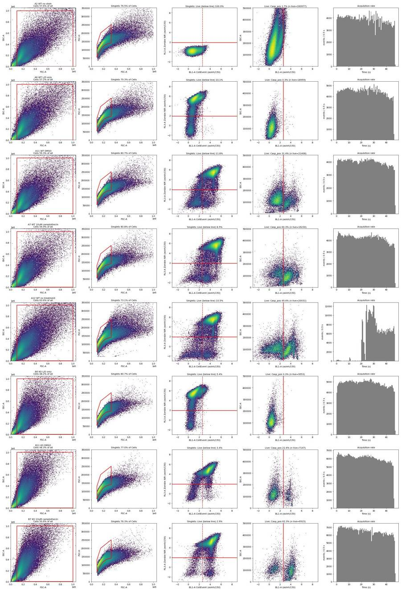
117
agent
The gates look right on every representative well. Only A12 needs a flag (clog). Next I'll write flags.csv and condition_summary.csv, then make the main figure, loading the dataviz skill first.
118
tool call · Skill
{
"skill": "dataviz"
}119
tool output
Launching skill: dataviz
120
tool call · Bash
cd /tmp/claude-0/bundled-skills/2.1.322/f3877e27d76aaf56a8e74f3e2bcb2357/dataviz; sed -n 1,200p references/palette.md | head -120; ls scripts
121
tool output
# Reference palette
This is the **reference instance** of the data-viz method: every parameter the
method needs, filled in with a validated default palette. The rest of the skill
is system-agnostic - **to target your brand, substitute this file's values** and
re-run the validator. Nothing else changes.
## How to use these values
Everything below is plain hex. In an HTML chart, **define the slots you use as
CSS custom properties in a local `<style>` block** at the top of the file, then
reference them by role throughout - so the light/dark values swap in one place,
and the chart body is written against roles rather than raw hex:
```css
.viz-root {
color-scheme: light;
--surface-1: #fcfcfb; /* chart surface */
--text-primary: #0b0b0b;
--text-secondary: #52514e;
--series-1: #2a78d6; /* categorical slot 1 */
/* ...only the roles this chart uses */
}
@media (prefers-color-scheme: dark) {
:root:where(:not([data-theme="light"])) .viz-root {
color-scheme: dark;
--surface-1: #1a1a19;
--text-primary: #f0efec;
--text-secondary: #c3c2b7;
--series-1: #3987e5;
}
}
:root[data-theme="dark"] .viz-root {
color-scheme: dark;
--surface-1: #1a1a19;
--text-primary: #f0efec;
--text-secondary: #c3c2b7;
--series-1: #3987e5;
}
```
Declare the dark values under both scopes as above - the media query covers
the OS setting; the `data-theme` scope covers the viewer's theme toggle,
which must win both ways (the `:not(...)` guard lets a light stamp beat
OS-dark; `:where()` keeps the media block below the toggle scope).
## Categorical palette
Both modes are selected. The dark column is the same eight hues stepped for the
dark surface, not a separate palette:
| Slot | Hue | Light | Dark |
|------|-----|-------|------|
| 1 | blue | `#2a78d6` | `#3987e5` |
| 2 | orange | `#eb6834` | `#d95926` |
| 3 | aqua | `#1baf7a` | `#199e70` |
| 4 | yellow | `#eda100` | `#c98500` |
| 5 | magenta | `#e87ba4` | `#d55181` |
| 6 | green | `#008300` | `#008300` |
| 7 | violet | `#6250d6` | `#9085e9` |
| 8 | red | `#e34948` | `#e66767` |
This order passes every hard gate in both modes on the default *adjacent*
pairlist (stacks, bars, lines): worst adjacent CVD Delta E 9.1 light / 8.4 dark
(OKLab ×100, >=8 target), worst adjacent normal-vision Delta E 19.6 light / 19.3
dark (>=15 floor). Under `--pairs all` (scatter, bubble, choropleth, small
multiples) the full eight cannot clear the floors - with all 28 pairs in
play no ordering can (the pairlist no longer depends on order), and
re-stepping is off the table by the documented-palette rule - so those
chart forms carry a series cap: **the first three slots validate all-pairs
in both modes** (worst pair CVD Delta E 9.2 light / 9.4 dark, normal-vision 24.0
light / 20.9 dark - clear of the CVD warn band). Past three, fold to "Other" or
facet: the fourth slot puts yellow and orange on screen
together, and that pair fails the all-pairs floors (normal-vision 13.7
light; CVD 4.8 dark). Three light-mode slots (magenta, yellow, aqua)
sit below 3:1 contrast on the light surface: the **relief rule** applies (ship
visible direct labels or the table view). The dark steps were chosen for the
dark band (OKLCH L ~ 0.48-0.67, >= 3:1 on the dark surface) and validated as a
set. (Ordering history: adopted July 2026 for its more harmonious opening -
the same eight hues and steps as its predecessor, re-ordered, zero hex
changes. The predecessor validated its first FOUR slots all-pairs, with its
dark run in the 6-8 CVD warn band, so secondary encoding was required there;
this order deliberately trades that fourth slot - yellow now sits beside orange -
for better-looking leading colors. Revisit the trade if yellow<->orange
confusion shows up in real charts with four or more series; undoing it is a
pure re-order. Light slot 7 has since been lightened, `#4a3aa7` -> `#6250d6`
(August 2026); the adjacent-pair figures above are unchanged by that move, the
non-adjacent blue<->violet pair now sits below both floors under `--pairs all`
(normal-vision 10.5, CVD 4.5 - inside the range the series cap already
excludes), and the order enumeration was run with the earlier value.) When you
swap in your own ramps, hold your palette to the full gate.
The slot **ordering** is the CVD-safety mechanism, not cosmetic - candidate
orderings were enumerated and only those clearing every adjacent gate in both
modes kept (see `color-formula.md` § Themes); this default is one of the
passing orders, picked among them for its opening colors. When you swap in
your brand's hues, do the same: run the validator on candidate orderings and
choose only among the passing ones.
## Sequential hue
Default single hue: **blue**, light->dark. When two sequential contexts appear at
once, the second takes the next categorical slot's hue (orange), each as its own
one-hue ramp.
| step | hex | step | hex | step | hex | step | hex |
|---|---|---|---|---|---|---|---|
| 100 | `#cde2fb` | 250 | `#86b6ef` | 400 | `#3987e5` | 550 | `#1c5cab` |
| 150 | `#b7d3f6` | 300 | `#6da7ec` | 450 | `#2a78d6` | 600 | `#184f95` |
| 200 | `#9ec5f4` | 350 | `#5598e7` | 500 | `#256abf` | 650 | `#104281` |
| | | | | | | 700 | `#0d366b` |
The full 100->700 range is for **sequential** encoding (continuous magnitude -
heatmaps, choropleths) where the lightest step means "near zero" and is allowed
to recede toward the surface. For an **ordinal** ramp (discrete ordered marks -
funnel stages, tiers - validated with `--ordinal`), the step nearest the surface
must still clear 2:1: on light, start no lighter than **step 250** (`#86b6ef`,
2.06:1); on dark, go no darker than **step 600** (`#184f95`, 2.15:1).
## Diverging pair
validate_palette.js
validate_palette.py
Shell cwd was reset to /task123
tool call · Bash
cd /tmp/claude-0/bundled-skills/2.1.322/f3877e27d76aaf56a8e74f3e2bcb2357/dataviz; node scripts/validate_palette.js "#2a78d6,#eb6834" --mode light 2>&1 | tail -20
124
tool output
/bin/bash: line 1: node: command not found Shell cwd was reset to /task
125
tool call · Bash
cd /tmp/claude-0/bundled-skills/2.1.322/f3877e27d76aaf56a8e74f3e2bcb2357/dataviz; python3 scripts/validate_palette.py "#2a78d6,#eb6834" --mode light 2>&1 | tail -20
126
tool output
Palette (light, surface #fcfcfb, categorical): 2 slots [PASS] Lightness band all 2 inside L 0.43–0.77 [PASS] Chroma floor all 2 >= 0.1 [PASS] CVD separation worst adjacent #eb6834↔#2a78d6 ΔE 24.7 (protan) · tritan 32.7 [PASS] Normal-vision floor worst adjacent #eb6834↔#2a78d6 ΔE 33.6 (normal) [PASS] Contrast vs surface all 2 >= 3:1 → ALL CHECKS PASS (CVD in the 6–8 floor band is legal ONLY with secondary encoding: direct labels, gaps, or texture) scope: categorical palettes only. For a lone status/text color check text contrast with this script's apca() or contrast(); for a sequential ramp, lightness monotonicity. Shell cwd was reset to /task
128
tool call · Bash
cd /task/work; cat > timeqc.py <<'EOF'
from load import *
import flowkit as fk
g = fk.parse_gating_xml('/task/outputs/gates.xml')
rows=[]
for _,r in lay.iterrows():
s, df = load(r.file); res = g.gate_sample(s)
t = df['Time'].values
L = res.get_gate_membership('Live'); P = res.get_gate_membership('Casp_pos'); S=res.get_gate_membership('Singlets')
h,_ = np.histogram(t, bins=np.arange(0,47,1.0)); med=np.median(h)
e = np.arange(0,48,8); vals=[]; vv=[]
for a,b in zip(e[:-1],e[1:]):
m=(t>=a)&(t<b)
if L[m].sum()>50: vals.append(P[m].sum()/L[m].sum()*100)
if S[m].sum()>50: vv.append(L[m].sum()/S[m].sum()*100)
rows.append(dict(well=r.well, med_rate=med, max_rate=h.max(), min_rate=h.min(), n_low=(h<0.5*med).sum(), casp_bins=f"{min(vals):.1f}-{max(vals):.1f}", live_bins=f"{min(vv):.1f}-{max(vv):.1f}", argmax=np.argmax(h)))
print(pd.DataFrame(rows).to_string())
r = lay[lay.well=='A12'].iloc[0]; s, df = load(r.file); t=df['Time'].values
m=(t>=4)&(t<20); print('A12 4-20s events', m.sum(), 'rate', m.sum()/16, 'frac of file', m.sum()/len(t))
m=(t<20); print('A12 0-20 events', m.sum(), m.sum()/len(t))
EOF
python3 timeqc.py129
tool output
well med_rate max_rate min_rate n_low casp_bins live_bins argmax 0 A2 7952.5 8559 6524 0 1.5-1.9 100.0-100.0 1 1 A4 9495.5 10043 8227 0 90.4-90.8 100.0-100.0 27 2 A6 9116.0 9741 7515 0 0.1-0.4 9.8-11.1 26 3 A7 8537.0 9212 7127 0 59.3-60.9 8.2-9.2 1 4 A8 8494.0 12591 6222 0 70.7-72.5 10.1-12.0 3 5 A9 9134.5 10328 7638 0 70.7-71.9 13.8-15.6 1 6 A10 11839.0 13883 9391 0 64.9-67.7 11.0-12.8 1 7 A11 8140.5 8473 7057 0 29.8-32.4 11.3-12.0 27 8 A12 12400.0 22923 0 21 45.1-78.0 9.2-23.0 29 9 B2 8382.5 8910 7126 0 5.9-6.9 99.9-100.0 27 10 B4 13170.5 13619 10957 0 94.3-95.0 100.0-100.0 1 11 B6 9902.5 10556 8578 0 0.1-0.6 5.2-5.6 27 12 B7 13009.5 14304 11806 0 61.3-64.3 2.8-3.1 3 13 B8 10816.0 15521 8704 0 58.6-60.9 1.7-2.0 4 14 B9 9334.0 9932 7483 0 47.9-51.5 4.6-5.0 4 15 B10 11644.5 12446 9447 0 44.4-46.9 3.5-3.9 2 16 B11 12415.0 13143 10242 0 20.1-22.2 3.1-3.7 1 17 B12 11435.0 12807 9237 0 21.6-24.9 4.9-6.0 6 A12 4-20s events 1740 rate 108.75 frac of file 0.004253509145044662 A12 0-20 events 2824 0.006903396451497773
131
tool call · Bash
cd /task/work; cat > summarise.py <<'EOF'
import pandas as pd, numpy as np
c = pd.read_csv('/task/outputs/counts.csv')
lay = pd.read_csv('/task/inputs/plate_layout.csv')
P = c.pivot(index='well', columns='population', values='count')
P['casp_live'] = 100*P['Casp_pos']/P['Live']
P['viab'] = 100*P['Live']/P['Singlets']
P['casp_total'] = 100*(P['Casp_pos']+P['Dead_Casp_pos'])/P['Singlets']
P.to_csv('per_well_metrics.csv')
EXCL = {'A12'}
TX = {'DMSO':'DMSO','no treatment':'noTx','1uM camptothecin':'CPT1uM','2uM camptothecin':'CPT2uM','5uM camptothecin':'CPT5uM','10uM camptothecin':'CPT10uM','L/D only':'LDonly'}
MET = {'casp_live':('caspLive','Casp_pos / Live (x100): % CellEvent caspase-3/7+ (BL1-A >= 1000) among live (RL3-A Zombie NIR < 500) singlet cells'),
'viab':('viability','Live / Singlets (x100): % Zombie NIR-negative (RL3-A < 500) cells among singlets'),
'casp_total':('caspTotal','(Casp_pos + Dead_Casp_pos) / Singlets (x100): % CellEvent+ (BL1-A >= 1000) among all singlets, live + dead')}
rows=[]
def add(name, wells, metric):
wells=[w for w in wells if w not in EXCL]
v = P.loc[wells, metric].values
rows.append(dict(condition=f"{name}_{MET[metric][0]}", wells=';'.join(wells), n_wells_used=len(wells), mean=round(float(v.mean()),2),
sd=round(float(v.std(ddof=1)),2) if len(v)>1 else '', metric_definition=MET[metric][1], normalisation_applied='none'))
for metric in ['casp_live','viab']:
for geno in ['WT','KO']:
for t in ['L/D only','DMSO','no treatment','1uM camptothecin','2uM camptothecin','5uM camptothecin','10uM camptothecin']:
if metric=='casp_live' and t=='L/D only':
pass # FMO control: report as background reference
w = lay[(lay.genotype==geno)&(lay.treatment==t)].well.tolist()
w = [x for x in w if x not in EXCL]
if not w: continue
add(f"{geno}_{TX[t]}", w, metric)
cpt = lay[(lay.genotype==geno)&(lay.treatment.str.contains('camptothecin'))].well.tolist()
add(f"{geno}_CPTpooled1to10uM", cpt, metric)
if geno=='KO': add("KO_DMSOandNoTx", ['B11','B12'], metric)
for geno in ['WT','KO']:
for t in ['DMSO','10uM camptothecin']:
add(f"{geno}_{TX[t]}", lay[(lay.genotype==geno)&(lay.treatment==t)].well.tolist(), 'casp_total')
add(f"{geno}_CPTpooled1to10uM", lay[(lay.genotype==geno)&(lay.treatment.str.contains('camptothecin'))].well.tolist(), 'casp_total')
cs = pd.DataFrame(rows)
# rename FMO rows for clarity
cs['condition'] = cs['condition'].str.replace('_LDonly_caspLive','_LDonlyFMO_caspLive')
cs.to_csv('/task/outputs/condition_summary.csv', index=False)
print(cs[['condition','wells','n_wells_used','mean','sd']].to_string())
print(P[['Live','casp_live','viab','casp_total']].round(2).to_string())
EOF
python3 summarise.py132
tool output
condition wells n_wells_used mean sd 0 WT_LDonlyFMO_caspLive A6 1 0.26 1 WT_DMSO_caspLive A11 1 31.40 2 WT_CPT1uM_caspLive A10 1 65.93 3 WT_CPT2uM_caspLive A9 1 71.48 4 WT_CPT5uM_caspLive A8 1 71.70 5 WT_CPT10uM_caspLive A7 1 60.33 6 WT_CPTpooled1to10uM_caspLive A7;A8;A9;A10 4 67.36 5.39 7 KO_LDonlyFMO_caspLive B6 1 0.29 8 KO_DMSO_caspLive B11 1 21.62 9 KO_noTx_caspLive B12 1 22.98 10 KO_CPT1uM_caspLive B10 1 46.10 11 KO_CPT2uM_caspLive B9 1 50.34 12 KO_CPT5uM_caspLive B8 1 60.08 13 KO_CPT10uM_caspLive B7 1 62.27 14 KO_CPTpooled1to10uM_caspLive B7;B8;B9;B10 4 54.70 7.73 15 KO_DMSOandNoTx_caspLive B11;B12 2 22.30 0.96 16 WT_LDonly_viability A6 1 10.12 17 WT_DMSO_viability A11 1 11.84 18 WT_CPT1uM_viability A10 1 11.61 19 WT_CPT2uM_viability A9 1 14.41 20 WT_CPT5uM_viability A8 1 11.22 21 WT_CPT10uM_viability A7 1 8.48 22 WT_CPTpooled1to10uM_viability A7;A8;A9;A10 4 11.43 2.43 23 KO_LDonly_viability B6 1 5.37 24 KO_DMSO_viability B11 1 3.43 25 KO_noTx_viability B12 1 5.30 26 KO_CPT1uM_viability B10 1 3.75 27 KO_CPT2uM_viability B9 1 4.77 28 KO_CPT5uM_viability B8 1 1.89 29 KO_CPT10uM_viability B7 1 2.93 30 KO_CPTpooled1to10uM_viability B7;B8;B9;B10 4 3.34 1.23 31 KO_DMSOandNoTx_viability B11;B12 2 4.36 1.32 32 WT_DMSO_caspTotal A11 1 89.01 33 WT_CPT10uM_caspTotal A7 1 95.55 34 WT_CPTpooled1to10uM_caspTotal A7;A8;A9;A10 4 95.34 0.57 35 KO_DMSO_caspTotal B11 1 92.49 36 KO_CPT10uM_caspTotal B7 1 96.36 37 KO_CPTpooled1to10uM_caspTotal B7;B8;B9;B10 4 95.50 1.21 population Live casp_live viab casp_total well A10 26933 65.93 11.61 94.88 A11 21408 31.40 11.84 89.01 A12 20031 49.37 10.52 92.28 A2 160977 1.70 100.00 1.71 A4 196351 90.56 100.00 90.56 A6 18959 0.26 10.12 1.98 A7 16230 60.33 8.48 95.55 A8 21249 71.70 11.22 96.05 A9 28796 71.48 14.41 94.87 B10 8061 46.10 3.75 95.00 B11 7147 21.62 3.43 92.49 B12 11133 22.98 5.30 91.08 B2 187170 6.68 99.97 6.69 B4 263997 94.48 100.00 94.48 B6 9553 0.29 5.37 2.91 B7 6915 62.27 2.93 96.36 B8 3953 60.08 1.89 96.62 B9 7910 50.34 4.77 94.03
134
agent
Condition summary is written. Now writing flags.csv (A12 excluded for the clog; A8/B8 kept with a note about a one-second burst), then the figure.
135
tool call · Bash
cd /task/work; cat > flags.py <<'EOF'
import pandas as pd
lay = pd.read_csv('/task/inputs/plate_layout.csv')
P = pd.read_csv('per_well_metrics.csv', index_col=0)
special = {
'A12': ('clog', "Flow interruption: 21 of 46 one-second bins had <50% of the well's median event rate; only 1,740 events were recorded between 4 and 20 s (~109 events/s vs 7,000-13,000 events/s in every other well), then a surge to 22,923 events/s at ~21-29 s. Singlets were 73.1% of Cells (vs 74.6-85.4% in other wells) and Casp_pos/Live swung 45.1-78.0% between 8-s time bins (other wells vary by <=3.6 points). Casp_pos/Live 49.4% vs 31.4% in matched WT DMSO (A11), whereas KO no-treatment vs KO DMSO differ by only 1.4 points.", 'exclude'),
'A8': ('other', "Single 1-s event burst at ~3 s (12,591 events/s vs well median 8,494 events/s, <1% of the 384,992 events); no gaps. Readout stable over time: Casp_pos/Live 70.7-72.5% and Live/Singlets 10.1-12.0% across 8-s bins. Kept.", 'keep_with_note'),
'B8': ('other', "Single 1-s event burst at ~4 s (15,521 events/s vs well median 10,816 events/s); no gaps. Readout stable: Casp_pos/Live 58.6-60.9% across 8-s bins. Note lowest live count on plate (3,953 Live events; Live = 1.9% of Singlets), so binomial 95% CI on Casp_pos/Live is about +/-1.5 points. Kept.", 'keep_with_note'),
}
rows=[]
for _,r in lay.iterrows():
if r.well in special:
it, ev, dec = special[r.well]
else:
it, ev, dec = 'none', '', 'keep'
rows.append(dict(file=r.file, well=r.well, issue_type=it, evidence=ev, decision=dec))
pd.DataFrame(rows).to_csv('/task/outputs/flags.csv', index=False)
print(pd.DataFrame(rows)[['well','issue_type','decision']].to_string())
EOF
python3 flags.py136
tool output
well issue_type decision 0 A2 none keep 1 A4 none keep 2 A6 none keep 3 A7 none keep 4 A8 other keep_with_note 5 A9 none keep 6 A10 none keep 7 A11 none keep 8 A12 clog exclude 9 B2 none keep 10 B4 none keep 11 B6 none keep 12 B7 none keep 13 B8 other keep_with_note 14 B9 none keep 15 B10 none keep 16 B11 none keep 17 B12 none keep
138
tool call · Bash
cd /task/work; cat > figure.py <<'EOF'
import matplotlib; matplotlib.use('Agg')
import matplotlib.pyplot as plt, pandas as pd, numpy as np
P = pd.read_csv('per_well_metrics.csv', index_col=0)
lay = pd.read_csv('/task/inputs/plate_layout.csv').set_index('well')
COL = {'WT':'#2a78d6','KO':'#eb6834'}; INK='#0b0b0b'; INK2='#52514e'; GRID='#e4e3df'
cats = ['L/D only','DMSO','no treatment','1uM camptothecin','2uM camptothecin','5uM camptothecin','10uM camptothecin']
labels = ['Untreated\n(L/D-only\nFMO well)','DMSO\nvehicle','No\ntreatment','CPT\n1 µM','CPT\n2 µM','CPT\n5 µM','CPT\n10 µM']
def ci(k,n):
p=k/n; se=np.sqrt(p*(1-p)/n); return 196*se
fig, axes = plt.subplots(1,2, figsize=(14,5.6))
plt.rcParams['font.size']=10
for ai,(metric,num,den,title,ylab) in enumerate([
('casp_live','Casp_pos','Live','A Caspase-3/7+ among live neurons','% CellEvent+ of live singlets\n(Casp_pos / Live)'),
('viab','Live','Singlets','B Viability','% Zombie NIR-negative of singlets\n(Live / Singlets)')]):
ax = axes[ai]
for gi,geno in enumerate(['WT','KO']):
xs=[];ys=[]
for xi,t in enumerate(cats):
if metric=='casp_live' and t=='L/D only': continue
w = lay[(lay.genotype==geno)&(lay.treatment==t)].index[0]
k=P.loc[w,num]; n=P.loc[w,den]; y=P.loc[w,metric]; e=ci(k,n)
x = xi + (-0.12 if geno=='WT' else 0.12)
if w=='A12':
ax.errorbar(x,y,yerr=e,fmt='o',mfc='white',mec=COL[geno],ecolor=COL[geno],ms=8,mew=1.5,capsize=0, zorder=3)
ax.annotate('A12 excluded\n(clog)', (x,y), xytext=(-8,14), textcoords='offset points', ha='right', fontsize=8, color=INK2)
continue
ax.errorbar(x,y,yerr=e,fmt='o',color=COL[geno],ms=8,mec='white',mew=1.2,capsize=0,zorder=3, label=f'{geno}' if xi==3 else None)
if 'camptothecin' in t: xs.append(x); ys.append(y)
ax.plot(xs,ys,'-',color=COL[geno],lw=2,zorder=2)
ax.annotate(geno, (xs[-1],ys[-1]), xytext=(10,0), textcoords='offset points', va='center', color=INK, fontsize=10, fontweight='bold')
if metric=='casp_live':
fmo = P.loc[['A6','B6'],'casp_live'].mean()
ax.axhline(fmo, color=INK2, ls=':', lw=1)
ax.text(0.55, fmo+1.2, f'Caspase FMO background (L/D-only live cells) {fmo:.1f}%', fontsize=8, color=INK2)
ax.set_ylim(0,80); ax.set_xlim(0.5,6.6)
else:
ax.set_ylim(0,16); ax.set_xlim(-0.5,6.6)
ax.set_xticks(range(len(cats))); ax.set_xticklabels(labels, fontsize=9)
ax.set_ylabel(ylab, color=INK); ax.set_title(title, loc='left', fontsize=12, color=INK, fontweight='bold')
ax.grid(axis='y', color=GRID, lw=0.8); ax.set_axisbelow(True)
for sp in ['top','right']: ax.spines[sp].set_visible(False)
for sp in ['left','bottom']: ax.spines[sp].set_color('#bdbcb7')
ax.tick_params(colors=INK2)
ax.legend(frameon=False, loc='upper left' if metric=='casp_live' else 'upper right', title='Genotype', fontsize=9)
fig.suptitle('PGRN-KO vs WT iPSC neurons, 4.5 h camptothecin (CPT): caspase-3/7 activity is induced by CPT in both genotypes, not higher in KO; KO cultures have far fewer live cells',
fontsize=10.5, color=INK, x=0.01, ha='left')
fig.text(0.01, 0.005, 'One well per condition (no replicates); error bars = binomial 95% CI from event counts only (do not reflect well-to-well variability). Gates: Cells (FSC-A 1e5-1e6, SSC-A 5e3-1e6) > Singlets (FSC-A/FSC-H) > Live (RL3-A < 500) > Casp_pos (BL1-A >= 1000).\nWT and KO were on separate culture plates. 85-98% of singlets were Zombie NIR-positive in every stained well.', fontsize=8, color=INK2, ha='left', va='bottom')
plt.tight_layout(rect=(0,0.06,1,0.95))
plt.savefig('/task/outputs/figure.png', dpi=150)
EOF
python3 figure.py139
tool output
(Bash completed with no output)
140
tool call · Read
{
"file_path": "/task/outputs/figure.png"
}141
tool output
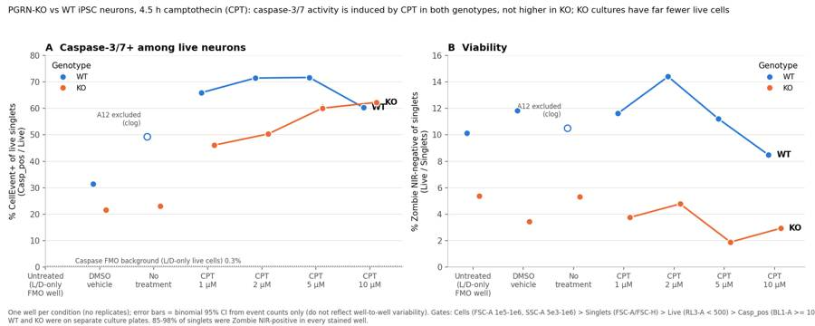
143
tool call · Bash
cd /task/work; python3 - <<'EOF'
s = open('figure.py').read()
s = s.replace(""" ax.annotate(geno, (xs[-1],ys[-1]), xytext=(10,0), textcoords='offset points', va='center', color=INK, fontsize=10, fontweight='bold')""",
""" dy = 0
if metric=='casp_live': dy = -12 if geno=='WT' else 10
ax.annotate(geno, (xs[-1],ys[-1]), xytext=(10,dy), textcoords='offset points', va='center', color=INK, fontsize=10, fontweight='bold')""")
s = s.replace("""ax.annotate('A12 excluded\\n(clog)', (x,y), xytext=(-8,14), textcoords='offset points', ha='right', fontsize=8, color=INK2)""",
"""ax.annotate('WT no treatment\\n(A12, excluded: clog)', (x,y), xytext=(0,-16), textcoords='offset points', ha='center', va='top', fontsize=8, color=INK2)""")
s = s.replace(""" ax.set_xticks(range(len(cats))); ax.set_xticklabels(labels, fontsize=9)""",
""" if metric=='casp_live': ax.set_xticks(range(1,len(cats))); ax.set_xticklabels(labels[1:], fontsize=9)
else: ax.set_xticks(range(len(cats))); ax.set_xticklabels(labels, fontsize=9)""")
s = s.replace("""Gates: Cells (FSC-A 1e5-1e6, SSC-A 5e3-1e6) > Singlets (FSC-A/FSC-H) > Live (RL3-A < 500) > Casp_pos (BL1-A >= 1000).\\nWT and KO were on separate culture plates. 85-98% of singlets were Zombie NIR-positive in every stained well.""",
"""\\nGates: Cells (FSC-A 1e5-1e6, SSC-A 5e3-1e6) > Singlets (FSC-A/FSC-H) > Live (RL3-A < 500) > Casp_pos (BL1-A >= 1000). WT and KO came from separate culture plates;\\n86-98% of singlets were Zombie NIR-positive (dead) in every stained well, and 95-99% of those dead cells were CellEvent+ regardless of treatment.""")
s = s.replace("rect=(0,0.06,1,0.95)","rect=(0,0.08,1,0.95)")
open('figure.py','w').write(s)
EOF
python3 figure.py144
tool output
(Bash completed with no output)
145
tool call · Read
{
"file_path": "/task/outputs/figure.png"
}146
tool output
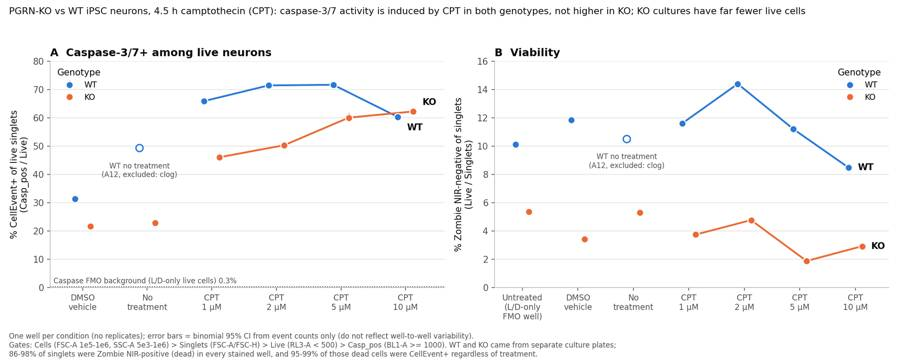
148
agent
The figure is done. Next I'm running a final threshold-sensitivity check for the report, then writing report.md and answer.json.
149
tool call · Bash
cd /task/work; cat > sens.py <<'EOF'
from load import *
import flowkit as fk
g = fk.parse_gating_xml('/task/outputs/gates.xml')
res_rows=[]
for _,r in lay.iterrows():
if r.treatment in ('no stain','caspase only'): continue
s, df = load(r.file); res = g.gate_sample(s)
S = res.get_gate_membership('Singlets')
d = dict(well=r.well, s=r['sample'])
for lt in [300,500,800]:
L = S & (df['RL3-A'].values<lt)
for bt in [800,1000,1500,2000]:
d[f'L{lt}_B{bt}'] = (df['BL1-A'].values[L]>=bt).mean()*100
res_rows.append(d)
o = pd.DataFrame(res_rows).set_index('well')
o.to_csv('sensitivity.csv')
cols=[c for c in o.columns if c!='s']
grp = {'WT_DMSO':['A11'],'KO_DMSO':['B11'],'KO_noTx':['B12'],'WT_CPT':['A7','A8','A9','A10'],'KO_CPT':['B7','B8','B9','B10'],'WT_FMO':['A6'],'KO_FMO':['B6']}
out = pd.DataFrame({k:o.loc[v,cols].mean() for k,v in grp.items()}).T
print(out.round(1).to_string())
EOF
python3 sens.py150
tool output
L300_B800 L300_B1000 L300_B1500 L300_B2000 L500_B800 L500_B1000 L500_B1500 L500_B2000 L800_B800 L800_B1000 L800_B1500 L800_B2000 WT_DMSO 34.2 30.2 23.0 18.0 35.7 31.4 24.2 19.3 37.5 33.0 25.8 20.9 KO_DMSO 19.1 18.1 16.3 14.2 22.6 21.6 19.6 17.4 26.2 25.1 22.9 20.5 KO_noTx 20.1 19.3 17.0 14.6 24.0 23.0 20.4 17.9 27.5 26.2 23.3 20.7 WT_CPT 72.2 66.8 54.1 42.8 72.7 67.4 54.8 43.8 73.8 68.5 56.2 45.3 KO_CPT 56.7 55.5 51.9 47.5 56.0 54.7 51.0 46.7 56.2 54.7 51.0 46.8 WT_FMO 0.4 0.3 0.2 0.1 0.4 0.3 0.2 0.1 0.4 0.3 0.2 0.1 KO_FMO 0.5 0.3 0.0 0.0 0.5 0.3 0.0 0.0 0.5 0.3 0.1 0.1
152
tool call · Bash
cd /task/work; cat > extra.py <<'EOF'
from load import *
import flowkit as fk
g = fk.parse_gating_xml('/task/outputs/gates.xml')
for w in ['A2','B2','A4','B4','A6','B6','A11','B11','A7','B7']:
r = lay[lay.well==w].iloc[0]; s, df = load(r.file); res = g.gate_sample(s)
S=res.get_gate_membership('Singlets'); L=res.get_gate_membership('Live'); D=res.get_gate_membership('Dead')
print(w, r['sample'], 'singlet BL1 med', np.median(df['BL1-A'][S]), 'live BL1 med', np.median(df['BL1-A'][L]), 'live RL3 med', np.median(df['RL3-A'][L]), 'dead RL3 med', np.median(df['RL3-A'][D]) if D.sum()>100 else '-', 'unst RL3 p99.5', np.percentile(df['RL3-A'][S],99.5))
c = pd.read_csv('/task/outputs/counts.csv');
for pop in ['Cells','Singlets']:
x = c[c.population==pop]; print(pop, x.pct_of_parent.min(), x.pct_of_parent.max())
EOF
python3 extra.py153
tool output
A2 WT no stain singlet BL1 med 135.0 live BL1 med 135.0 live RL3 med 22.0 dead RL3 med - unst RL3 p99.5 172.0 B2 KO no stain singlet BL1 med 284.0 live BL1 med 284.0 live RL3 med 26.0 dead RL3 med - unst RL3 p99.5 193.0 A4 WT caspase only singlet BL1 med 6348.0 live BL1 med 6348.0 live RL3 med 23.0 dead RL3 med - unst RL3 p99.5 176.0 B4 KO caspase only singlet BL1 med 3188.0 live BL1 med 3188.0 live RL3 med 25.0 dead RL3 med - unst RL3 p99.5 188.0 A6 WT L/D only singlet BL1 med 205.0 live BL1 med 72.0 live RL3 med -94.0 dead RL3 med 17193.0 unst RL3 p99.5 53464.75000000035 B6 KO L/D only singlet BL1 med 173.0 live BL1 med 73.0 live RL3 med -76.0 dead RL3 med 17476.0 unst RL3 p99.5 63612.04000000004 A11 WT DMSO singlet BL1 med 6753.0 live BL1 med 484.0 live RL3 med -74.0 dead RL3 med 16293.0 unst RL3 p99.5 50621.19500000001 B11 KO DMSO singlet BL1 med 3015.0 live BL1 med 193.0 live RL3 med 55.0 dead RL3 med 8397.0 unst RL3 p99.5 31721.199999999953 A7 WT 10uM camptothecin singlet BL1 med 11353.0 live BL1 med 1424.5 live RL3 med -133.0 dead RL3 med 19104.0 unst RL3 p99.5 61419.92000000016 B7 KO 10uM camptothecin singlet BL1 med 5231.0 live BL1 med 2578.0 live RL3 med -105.0 dead RL3 med 13434.0 unst RL3 p99.5 49643.17499999999 Cells 46.8352 63.6374 Singlets 73.1162 85.4405
155
tool call · Bash
cd /task/work; python3 - <<'EOF'
import pandas as pd
P = pd.read_csv('per_well_metrics.csv', index_col=0)
lay = pd.read_csv('/task/inputs/plate_layout.csv').set_index('well')
order = ['A2','A4','A6','A11','A12','A10','A9','A8','A7','B2','B4','B6','B11','B12','B10','B9','B8','B7']
print('| Well | Sample | Singlets | Live | Live % of Singlets | Casp_pos | Casp_pos % of Live | CellEvent+ % of all Singlets |')
print('|---|---|---|---|---|---|---|---|')
for w in order:
r=P.loc[w]; s=lay.loc[w,'sample']
nost = lay.loc[w,'treatment'] in ('no stain','caspase only')
lv = 'n/a (no Zombie)' if nost else f"{r.viab:.1f}"
cl = 'n/a' if nost else f"{r.casp_live:.1f}"
note = ' (excluded)' if w=='A12' else ''
print(f"| {w} | {s}{note} | {int(r.Singlets):,} | {int(r.Live):,} | {lv} | {int(r.Casp_pos):,} | {cl} | {r.casp_total:.1f} |")
EOF156
tool output
| Well | Sample | Singlets | Live | Live % of Singlets | Casp_pos | Casp_pos % of Live | CellEvent+ % of all Singlets | |---|---|---|---|---|---|---|---| | A2 | WT no stain | 160,980 | 160,977 | n/a (no Zombie) | 2,744 | n/a | 1.7 | | A4 | WT caspase only | 196,355 | 196,351 | n/a (no Zombie) | 177,820 | n/a | 90.6 | | A6 | WT L/D only | 187,336 | 18,959 | 10.1 | 50 | 0.3 | 2.0 | | A11 | WT DMSO | 180,762 | 21,408 | 11.8 | 6,723 | 31.4 | 89.0 | | A12 | WT no treatment (excluded) | 190,339 | 20,031 | 10.5 | 9,889 | 49.4 | 92.3 | | A10 | WT 1uM camptothecin | 231,897 | 26,933 | 11.6 | 17,757 | 65.9 | 94.9 | | A9 | WT 2uM camptothecin | 199,902 | 28,796 | 14.4 | 20,583 | 71.5 | 94.9 | | A8 | WT 5uM camptothecin | 189,468 | 21,249 | 11.2 | 15,235 | 71.7 | 96.1 | | A7 | WT 10uM camptothecin | 191,463 | 16,230 | 8.5 | 9,791 | 60.3 | 95.6 | | B2 | KO no stain | 187,231 | 187,170 | n/a (no Zombie) | 12,497 | n/a | 6.7 | | B4 | KO caspase only | 264,007 | 263,997 | n/a (no Zombie) | 249,423 | n/a | 94.5 | | B6 | KO L/D only | 178,049 | 9,553 | 5.4 | 28 | 0.3 | 2.9 | | B11 | KO DMSO | 208,391 | 7,147 | 3.4 | 1,545 | 21.6 | 92.5 | | B12 | KO no treatment | 210,075 | 11,133 | 5.3 | 2,558 | 23.0 | 91.1 | | B10 | KO 1uM camptothecin | 214,929 | 8,061 | 3.8 | 3,716 | 46.1 | 95.0 | | B9 | KO 2uM camptothecin | 165,660 | 7,910 | 4.8 | 3,982 | 50.3 | 94.0 | | B8 | KO 5uM camptothecin | 209,584 | 3,953 | 1.9 | 2,375 | 60.1 | 96.6 | | B7 | KO 10uM camptothecin | 236,114 | 6,915 | 2.9 | 4,306 | 62.3 | 96.4 |
158
tool call · Write
{
"file_path": "/task/outputs/report.md",
"content": "# EXP23000279: Caspase-3/7 flow assay, WT vs PGRN-KO iPSC neurons (acquired 09-Mar-2023)\n\n## Question\nFrom the plan: in this first assay-optimisation run, **is caspase activity different in PGRN-KO neurons from WT PGP1 iPSC-derived neurons?** Caspase activity was read as CellEvent Caspase-3/7 positivity (BL1). Live and dead cells were separated with Zombie NIR (RL3). Camptothecin (CPT; 1, 2, 5 and 10 \u00b5M, 4.5 h) was the pro-apoptotic positive control, with DMSO and no-treatment wells as baselines. Because this is an optimisation run, a second question is whether the assay is fit to answer the first one.\n\n## Methods\n- **Data.** 18 FCS 3.1 files from an Attune NxT, all acquired 15:13\u201315:35 on 09-Mar-2023. Each well ran for about 47 s, used about 155\u2013158 \u00b5L, and gave 365k\u2013612k events (threshold FSC 25,000). Wells were matched to conditions with `plate_layout.csv`. The plan's flow map lists duplicate control wells (A1/A2, A3/A4, A5/A6 and the same for row B), but only A2/A4/A6 and B2/B4/B6 were provided. Every condition is therefore a single well.\n- **Software.** FlowKit 1.2.3, with one `GatingStrategy` for all wells (`gates.xml`). Counts come from `strategy.gate_sample()` applied to the reloaded XML. Gates are drawn on raw linear channel values (no transform).\n- **Compensation.** None (`compensation_ref=\"uncompensated\"`). The file spillover matrix is the identity. The single stains show no cross-talk that matters for the readout:\n - In the caspase-only wells, RL3 median is 23\u201325, the same as unstained (22\u201326), even though BL1 medians are 3,188\u20136,348.\n - In the Zombie-only (L/D-only) wells, live cells have a BL1 median of 72\u201373, and 0.26\u20130.29% of them fall in the caspase gate.\n- **Gating hierarchy** (all wells, no per-well changes):\n 1. `Cells`: rectangle with FSC-A 100,000\u20131,000,000 and SSC-A 5,000\u20131,000,000. This removes the sub-cellular debris mode below the FSC valley at about 1\u00d710\u2075, plus saturated events (FSC or SSC = 1,048,575). It keeps 47\u201364% of events.\n 2. `Singlets` (in Cells): polygon on FSC-A vs FSC-H that follows the narrow singlet ridge formed by live cells, for FSC-A up to 320,000. Events with wide pulses or aggregates fall below it. It keeps 73\u201385% of Cells.\n 3. `Live` (in Singlets): RL3-A (Zombie NIR) < 500. Unstained cells have a 99.5th percentile of 172\u2013193. In stained wells, live cells have a median of \u2212133 to +55 and dead cells 8,400\u201319,100.\n 4. `Casp_pos` (in Live): BL1-A (CellEvent) \u2265 1,000. This threshold comes from the FMO (L/D-only wells A6/B6), where it gives 0.26% (WT) and 0.29% (KO) positive live cells. It also falls in the valley between the two modes of the KO live-cell distribution. **This is the primary readout.**\n 5. `Dead` (in Singlets): RL3-A \u2265 500, the exact complement of Live. `Dead_Casp_pos` (in Dead): BL1-A \u2265 1,000.\n- **Metrics** (`condition_summary.csv`):\n - Primary: `Casp_pos / Live` (% caspase-3/7+ live cells).\n - Secondary: `Live / Singlets` (viability) and `(Casp_pos + Dead_Casp_pos) / Singlets` (total CellEvent+).\n - No normalisation was applied. Fold changes in the text are simple ratios of the reported values.\n - The \"CPT pooled 1\u201310 \u00b5M\" rows average the four dose wells. Their SD reflects spread across doses, not replicate variability.\n- **QC.**\n - Event rate in 1-s bins over the acquisition. Readout stability in 8-s bins.\n - Saturation: \u22642% of events at the FSC/SSC ceiling (excluded by the Cells gate); \u22640.005% at the BL1/RL3 ceiling.\n - Genotype identity: KO wells have consistently lower FSC (median 92k\u2013117k vs 127k\u2013144k for WT).\n - Stain identity: each control well shows only the expected stain.\n- **Sensitivity.** The primary metric was recomputed with Live cut-offs of 300, 500 and 800 and Casp_pos cut-offs of 800, 1,000, 1,500 and 2,000 (`sensitivity.csv` logic, script in `analysis_scripts/`).\n- **Supporting plot.** `gating_qc.png` shows the gates on representative wells.\n\n## Results\n**QC.** Only one well has a real acquisition defect.\n- **A12 (WT no treatment) is a clog.** 21 of 46 one-second bins ran at below half the median rate. Only 1,740 events were recorded between 4 and 20 s (about 109/s, against 7,000\u201313,000/s in every other well), followed by a surge to 22,923 events/s. Singlets fell to 73.1% of Cells, and the primary readout swung from 45% to 78% between time bins (\u22643.6 points in every other well). A12 is **excluded**, so the WT baseline is the DMSO well only.\n- **A8 and B8** each had a single 1-s burst of about 1.45\u00d7 their median rate, but their readouts are stable over time. They are kept with a note.\n\n**Population structure.** In every stained well, most singlets are dead. Zombie NIR-bright cells make up 86\u201398% of singlets, including the untreated L/D-only wells (WT 89.9%, KO 94.6%). Live cells form a distinct population with higher FSC and lower SSC. Almost all dead cells are CellEvent+, whatever the treatment: 95\u201399% of Dead events against 2\u20133% in the FMO. As a result, **total CellEvent+ is 89\u201397% of singlets in every stained well**, with no usable assay window:\n\n| Group | Total CellEvent+ (% of singlets) |\n|---|---|\n| WT DMSO | 89.0 |\n| WT CPT, pooled | 95.3 \u00b1 0.6 |\n| KO DMSO | 92.5 |\n| KO CPT, pooled | 95.5 \u00b1 1.2 |\n\nThe informative readout is caspase-3/7 positivity among the live (Zombie-negative) cells.\n\n| Well | Sample | Singlets | Live | Live % of Singlets | Casp_pos | Casp_pos % of Live | CellEvent+ % of all Singlets |\n|---|---|---|---|---|---|---|---|\n| A2 | WT no stain | 160,980 | 160,977 | n/a (no Zombie) | 2,744 | n/a | 1.7 |\n| A4 | WT caspase only | 196,355 | 196,351 | n/a (no Zombie) | 177,820 | n/a | 90.6 |\n| A6 | WT L/D only (FMO) | 187,336 | 18,959 | 10.1 | 50 | 0.3 | 2.0 |\n| A11 | WT DMSO | 180,762 | 21,40
… [8,411 more characters not shown]159
tool output
File created successfully at: /task/outputs/report.md (file state is current in your context — no need to Read it back)
161
tool call · Bash
cd /task/work; python3 - <<'EOF'
from load import *
import flowkit as fk
g = fk.parse_gating_xml('/task/outputs/gates.xml')
lv=[];dd=[]
for _,r in lay.iterrows():
if r.treatment in ('no stain','caspase only'): continue
s, df = load(r.file); res = g.gate_sample(s)
L=res.get_gate_membership('Live'); D=res.get_gate_membership('Dead')
lv.append(np.median(df['RL3-A'][L])); dd.append(np.median(df['RL3-A'][D]))
print(r.well, lv[-1], dd[-1])
print(min(lv),max(lv),min(dd),max(dd))
EOF162
tool output
A6 -94.0 17193.0 A7 -133.0 19104.0 A8 -109.0 17718.0 A9 -139.0 18021.0 A10 -120.0 14308.0 A11 -74.0 16293.0 A12 -264.0 17086.0 B6 -76.0 17476.0 B7 -105.0 13434.0 B8 -75.0 15585.0 B9 -56.0 15166.0 B10 -83.0 15479.0 B11 55.0 8397.0 B12 55.0 7147.0 -264.0 55.0 7147.0 19104.0
163
tool call · Bash
cd /task/outputs; python3 - <<'EOF'
p='/task/outputs/report.md'; s=open(p).read()
reps = [
("live cells have a median of −133 to +55 and dead cells 8,400–19,100.", "live cells have a median of −264 to +55 and dead cells 7,100–19,100."),
("used about 155–158 µL", "used about 154–158 µL"),
("Saturation: ≤2% of events at the FSC/SSC ceiling (excluded by the Cells gate); ≤0.005% at the BL1/RL3 ceiling.", "Saturation: ≤2.0% of events at the FSC/SSC ceiling (excluded by the Cells gate); ≤0.006% at the BL1/RL3 ceiling."),
("As a result, **total CellEvent+ is 89–97% of singlets in every stained well**, with no usable assay window:", "As a result, **total CellEvent+ is 89–97% of singlets in every well stained with both dyes**, with no usable assay window:"),
("This direction holds at every gate setting tested: CPT/DMSO ratio 2.1–2.4× in WT and 2.5–2.7× in KO.", "This direction holds at every gate setting tested: CPT/DMSO ratio 2.0–2.4× in WT and 2.2–3.4× in KO."),
("KO stays at or below WT across all 12 threshold combinations: from −12.0 points down to −0.4 points at the strictest setting (Live < 800, BL1 ≥ 2,000).", "KO stays below WT across all 12 threshold combinations: by 15.1 points at the most permissive setting (Live < 300, BL1 ≥ 800) and by 0.4 points at the strictest (Live < 800, BL1 ≥ 2,000)."),
("WT CPT ranges from 43.8% to 72.7% caspase+ live cells across the cut-offs tested.", "WT CPT ranges from 43% to 74% caspase+ live cells across the cut-offs tested."),
]
for a,b in reps:
assert a in s, a[:60]
s=s.replace(a,b)
open(p,'w').write(s)
EOF164
tool output
(Bash completed with no output)
166
agent
The report is written and its numbers have been checked against the data. Now writing answer.json, copying the analysis scripts, and running final validation.
167
tool call · Bash
cd /task/work; cat > answer.py <<'EOF'
import json, pandas as pd
cs = pd.read_csv('/task/outputs/condition_summary.csv').set_index('condition')
def m(c): return cs.loc[c,'mean']
ans = {
"question": "Is there a difference in caspase (caspase-3/7) activity in PGRN-KO compared with WT PGP1 iPSC-derived neurons (baseline and with 1-10 uM camptothecin for 4.5 h), and is the CellEvent/Zombie NIR flow assay fit for this purpose?",
"comparisons": [
{"comparison": "KO vs WT, DMSO vehicle: % caspase-3/7+ of live cells", "a": "WT_DMSO_caspLive", "b": "KO_DMSO_caspLive", "direction": "decrease",
"magnitude": f"{m('KO_DMSO_caspLive'):.1f}% vs {m('WT_DMSO_caspLive'):.1f}% (-{m('WT_DMSO_caspLive')-m('KO_DMSO_caspLive'):.1f} points, {m('KO_DMSO_caspLive')/m('WT_DMSO_caspLive'):.2f}x); KO no-treatment 23.0%; KO below WT at all 12 gate settings tested (0.4-15.1 points); 1 well each", "confidence": "low"},
{"comparison": "WT: camptothecin (1-10 uM pooled) vs DMSO, % caspase-3/7+ of live cells", "a": "WT_DMSO_caspLive", "b": "WT_CPTpooled1to10uM_caspLive", "direction": "increase",
"magnitude": f"{m('WT_CPTpooled1to10uM_caspLive'):.1f}% (range 60.3-71.7% over 4 doses) vs {m('WT_DMSO_caspLive'):.1f}% (+{m('WT_CPTpooled1to10uM_caspLive')-m('WT_DMSO_caspLive'):.1f} points, {m('WT_CPTpooled1to10uM_caspLive')/m('WT_DMSO_caspLive'):.1f}x)", "confidence": "medium"},
{"comparison": "KO: camptothecin (1-10 uM pooled) vs DMSO, % caspase-3/7+ of live cells", "a": "KO_DMSO_caspLive", "b": "KO_CPTpooled1to10uM_caspLive", "direction": "increase",
"magnitude": f"{m('KO_CPTpooled1to10uM_caspLive'):.1f}% (range 46.1-62.3%, rising with dose) vs {m('KO_DMSO_caspLive'):.1f}% (+{m('KO_CPTpooled1to10uM_caspLive')-m('KO_DMSO_caspLive'):.1f} points, {m('KO_CPTpooled1to10uM_caspLive')/m('KO_DMSO_caspLive'):.1f}x)", "confidence": "medium"},
{"comparison": "KO vs WT, 10 uM camptothecin: % caspase-3/7+ of live cells", "a": "WT_CPT10uM_caspLive", "b": "KO_CPT10uM_caspLive", "direction": "no_clear_change",
"magnitude": f"{m('KO_CPT10uM_caspLive'):.1f}% vs {m('WT_CPT10uM_caspLive'):.1f}% (+{m('KO_CPT10uM_caspLive')-m('WT_CPT10uM_caspLive'):.1f} points); pooled-dose KO-WT difference changes sign with BL1 threshold (-12.7 at >=1000, +2.9 at >=2000)", "confidence": "low"},
{"comparison": "KO vs WT, DMSO vehicle: viability (% Live of Singlets)", "a": "WT_DMSO_viability", "b": "KO_DMSO_viability", "direction": "decrease",
"magnitude": f"{m('KO_DMSO_viability'):.1f}% vs {m('WT_DMSO_viability'):.1f}% ({m('KO_DMSO_viability')/m('WT_DMSO_viability'):.2f}x); KO lower in every matched condition (untreated L/D-only 5.4% vs 10.1%; CPT pooled 3.3% vs 11.4%); genotype confounded with culture plate", "confidence": "medium"},
{"comparison": "WT: camptothecin vs DMSO, total CellEvent+ of all singlets (live + dead)", "a": "WT_DMSO_caspTotal", "b": "WT_CPTpooled1to10uM_caspTotal", "direction": "no_clear_change",
"magnitude": f"{m('WT_CPTpooled1to10uM_caspTotal'):.1f}% vs {m('WT_DMSO_caspTotal'):.1f}% (+{m('WT_CPTpooled1to10uM_caspTotal')-m('WT_DMSO_caspTotal'):.1f} points); readout saturated because 95-99% of the 86-98% dead singlets are CellEvent+", "confidence": "medium"}
],
"overall_answer": "no: in live (Zombie NIR-negative) neurons PGRN-KO did not show more caspase-3/7 activity than WT. Baseline (DMSO) caspase+ was 21.6% KO vs 31.4% WT, and camptothecin raised both about 2.1-2.5x to similar levels (10 uM: 62.3% KO vs 60.3% WT). KO cultures did have about 3x fewer live cells (3.4% vs 11.8% of singlets in DMSO). With single wells, separate WT/KO plates and 86-98% dead cells in every well, this run cannot establish a genotype effect.",
"assay_verdict": "needs_optimisation",
"next_action": "repeat_with_change",
"next_change": {"what": "Neuron harvest/dissociation before staining (with replicate wells per condition)",
"from": "150 uL Accutase 5-10 min, quenched with 75 uL FBS; gave only 8.5-14.4% (WT) and 1.9-5.4% (KO) Zombie NIR-negative singlets, single wells per condition",
"to": "Gentle neuronal dissociation (papain-based neural dissociation kit, or Accutase plus ROCK inhibitor/RevitaCell, gentle trituration, cold handling after harvest), checked to give >=50% Zombie NIR-negative singlets, then rerun WT vs KO side by side with >=3 replicate wells per condition and matched <=0.1% DMSO vehicle",
"why": "86-98% of singlets were dead and 95-99% of dead cells were CellEvent+ in every condition, so total caspase signal is saturated. The informative live-cell readout rests on a small surviving subpopulation (3,953-11,133 live events in KO wells), and n=1 per condition gives no estimate of well-to-well variance. Camptothecin, the FMO-based gate (0.3% background) and the reagents already work."},
"excluded_wells": ["A12"],
"caveats": [
"One well per condition; the duplicate control wells in the flow map (A1, A3, A5, B1, B3, B5) were not provided; error bars are counting error only, so no statistical test is possible.",
"A12 (WT no treatment) excluded for a clog (about 109 events/s for 4-20 s, then a 22,923 events/s surge), so the WT baseline rests on one DMSO well.",
"86-98% of singlets were Zombie NIR-bright (dead) in every stained well, even untreated; 95-99% of dead cells were CellEvent+, so total caspase positivity (89-97%) has no window. The live-cell readout covers only 2-14% of cells and may be survivor-biased.",
"WT and KO came from separate culture plates; genotype is confounded with plate/culture, which may explain the lower KO viability and dimmer KO CellEvent staining (caspase-only BL1 median 3,188 vs 6,348).",
"The WT caspase+ value depends on the threshold (CPT pooled 43-74% across the cut-offs tested); the KO-vs-WT difference under camptothecin changes sign with the threshold, although the CPT>DMSO and KO<=WT-at-baseline directions hold at every setting.",
"DMSO vehicle was about 2% v/v and not matched across camptothecin doses (about 0.4-3.8% if t
… [419 more characters not shown]168
tool output
{
"question": "Is there a difference in caspase (caspase-3/7) activity in PGRN-KO compared with WT PGP1 iPSC-derived neurons (baseline and with 1-10 uM camptothecin for 4.5 h), and is the CellEvent/Zombie NIR flow assay fit for this purpose?",
"comparisons": [
{
"comparison": "KO vs WT, DMSO vehicle: % caspase-3/7+ of live cells",
"a": "WT_DMSO_caspLive",
"b": "KO_DMSO_caspLive",
"direction": "decrease",
"magnitude": "21.6% vs 31.4% (-9.8 points, 0.69x); KO no-treatment 23.0%; KO below WT at all 12 gate settings tested (0.4-15.1 points); 1 well each",
"confidence": "low"
},
{
"comparison": "WT: camptothecin (1-10 uM pooled) vs DMSO, % caspase-3/7+ of live cells",
"a": "WT_DMSO_caspLive",
"b": "WT_CPTpooled1to10uM_caspLive",
"direction": "increase",
"magnitude": "67.4% (range 60.3-71.7% over 4 doses) vs 31.4% (+36.0 points, 2.1x)",
"confidence": "medium"
},
{
"comparison": "KO: camptothecin (1-10 uM pooled) vs DMSO, % caspase-3/7+ of live cells",
"a": "KO_DMSO_caspLive",
"b": "KO_CPTpooled1to10uM_caspLive",
"direction": "increase",
"magnitude": "54.7% (range 46.1-62.3%, rising with dose) vs 21.6% (+33.1 points, 2.5x)",
"confidence": "medium"
},
{
"comparison": "KO vs WT, 10 uM camptothecin: % caspase-3/7+ of live cells",
"a": "WT_CPT10uM_caspLive",
"b": "KO_CPT10uM_caspLive",
"direction": "no_clear_change",
"magnitude": "62.3% vs 60.3% (+1.9 points); pooled-dose KO-WT difference changes sign with BL1 threshold (-12.7 at >=1000, +2.9 at >=2000)",
"confidence": "low"
},
{
"comparison": "KO vs WT, DMSO vehicle: viability (% Live of Singlets)",
"a": "WT_DMSO_viability",
"b": "KO_DMSO_viability",
"direction": "decrease",
"magnitude": "3.4% vs 11.8% (0.29x); KO lower in every matched condition (untreated L/D-only 5.4% vs 10.1%; CPT pooled 3.3% vs 11.4%); genotype confounded with culture plate",
"confidence": "medium"
},
{
"comparison": "WT: camptothecin vs DMSO, total CellEvent+ of all singlets (live + dead)",
"a": "WT_DMSO_caspTotal",
"b": "WT_CPTpooled1to10uM_caspTotal",
"direction": "no_clear_change",
"magnitude": "95.3% vs 89.0% (+6.3 points); readout saturated because 95-99% of the 86-98% dead singlets are CellEvent+",
"confidence": "medium"
}
],
"overall_answer": "no: in live (Zombie NIR-negative) neurons PGRN-KO did not show more caspase-3/7 activity than WT. Baseline (DMSO) caspase+ was 21.6% KO vs 31.4% WT, and camptothecin raised both about 2.1-2.5x to similar levels (10 uM: 62.3% KO vs 60.3% WT). KO cultures did have about 3x fewer live cells (3.4% vs 11.8% of singlets in DMSO). With single wells, separate WT/KO plates and 86-98% dead cells in every well, this run cannot establish a genotype effect.",
"assay_verdict": "needs_optimisation",
"next_action": "repeat_with_change",
"next_change": {
"what": "Neuron harvest/dissociation before staining (with replicate wells per condition)",
"from": "150 uL Acc170
tool call · Bash
cd /task/work; python3 - <<'EOF'
s=open('answer.py').read()
s=s.replace('''"a": "WT_DMSO_caspTotal", "b": "WT_CPTpooled1to10uM_caspTotal", "direction": "no_clear_change",''','''"a": "WT_DMSO_caspTotal", "b": "WT_CPTpooled1to10uM_caspTotal", "direction": "increase",''')
s=s.replace('''(+{m('WT_CPTpooled1to10uM_caspTotal')-m('WT_DMSO_caspTotal'):.1f} points); readout saturated''','''(+{m('WT_CPTpooled1to10uM_caspTotal')-m('WT_DMSO_caspTotal'):.1f} points, only {m('WT_CPTpooled1to10uM_caspTotal')/m('WT_DMSO_caspTotal'):.2f}x vs 2.1x in live cells); readout compressed near its ceiling''')
s=s.replace('''"confidence": "medium"}
],''','''"confidence": "low"}
],''')
open('answer.py','w').write(s)
EOF
python3 answer.py >/dev/null; mkdir -p /task/outputs/analysis_scripts; cp load.py build_gates.py counts.py summarise.py flags.py figure.py qc_plot.py timeqc.py sens.py answer.py /task/outputs/analysis_scripts/; cp sensitivity.csv /task/outputs/analysis_scripts/sensitivity.csv
cat > validate.py <<'EOF'
import flowkit as fk, pandas as pd, json, numpy as np
g = fk.parse_gating_xml('/task/outputs/gates.xml')
c = pd.read_csv('/task/outputs/counts.csv')
lay = pd.read_csv('/task/inputs/plate_layout.csv')
assert list(c.columns)==['file','well','population','role','parent','count','pct_of_parent']
gids = {gid for gid,_ in g.get_gate_ids()}
pops = set(c.population)-{'all_events'}
assert pops==gids, (pops,gids)
assert c.groupby('file').population.nunique().eq(len(gids)+1).all() and c.file.nunique()==18
for role in ['cells','singlets','live','marker_positive']:
assert c[c.role==role].population.nunique()==1, role
# re-gate check
for _,r in lay.iterrows():
s = fk.Sample('/task/inputs/raw/'+r.file); res = g.gate_sample(s)
sub = c[c.file==r.file].set_index('population')
for gid,path in g.get_gate_ids():
assert int(res.get_gate_count(gid,path))==sub.loc[gid,'count']
par = sub.loc[gid,'parent']; pc = sub.loc[par,'count']
assert abs(100*sub.loc[gid,'count']/pc - sub.loc[gid,'pct_of_parent'])<1e-3
f = pd.read_csv('/task/outputs/flags.csv'); assert len(f)==18 and set(f.columns)=={'file','well','issue_type','evidence','decision'}
cs = pd.read_csv('/task/outputs/condition_summary.csv'); assert cs.condition.is_unique
assert list(cs.columns)==['condition','wells','n_wells_used','mean','sd','metric_definition','normalisation_applied']
a = json.load(open('/task/outputs/answer.json'))
for cmp in a['comparisons']: assert cmp['a'] in set(cs.condition) and cmp['b'] in set(cs.condition)
assert set(a['excluded_wells'])==set(f[f.decision=='exclude'].well)
assert a['overall_answer'].split(':')[0] in ('yes','partial','no')
# excluded wells not in summary
assert not any('A12' in w.split(';') for w in cs.wells)
rep = open('/task/outputs/report.md').read()
hs = ['## Question','## Methods','## Results','## Conclusion','## Caveats','## Recommendation']
idx = [rep.index(h) for h in hs]; assert idx==sorted(idx)
print('ALL CHECKS OK');
EOF
python3 validate.py; ls -la /task/outputs171
tool output
ALL CHECKS OK total 1064 drwxr-xr-x 3 root root 4096 Nov 10 17:23 . drwxr-xr-x 5 root root 4096 Nov 10 17:08 .. drwxr-xr-x 2 root root 4096 Nov 10 17:23 analysis_scripts -rw-r--r-- 1 root root 5549 Nov 10 17:23 answer.json -rw-r--r-- 1 root root 5418 Nov 10 17:19 condition_summary.csv -rw-r--r-- 1 root root 11137 Nov 10 17:17 counts.csv -rw-r--r-- 1 root root 209373 Nov 10 17:20 figure.png -rw-r--r-- 1 root root 2220 Nov 10 17:19 flags.csv -rw-r--r-- 1 root root 3490 Nov 10 17:17 gates.xml -rw-r--r-- 1 root root 807198 Nov 10 17:17 gating_qc.png -rw-r--r-- 1 root root 13961 Nov 10 17:22 report.md
173
agent
**Answer: no.** In this run, PGRN-KO neurons did not show more caspase-3/7 activity than WT. My verdict is that the assay needs optimisation: the next step is to repeat it with a gentler harvest and replicate wells. All 7 deliverables are in `/task/outputs/` and pass a final check, including that the saved gates reproduce every count in `counts.csv`. Every condition is a single well, so none of these differences can be tested statistically.
**Gating:** Cells (FSC-A 100k–1M, SSC-A 5k–1M) → Singlets (FSC-A vs FSC-H) → Live (Zombie NIR < 500) → caspase-positive (CellEvent ≥ 1,000). I set the caspase cut-off on the Zombie-only wells, where only 0.3% of live cells fall above it. No compensation was applied: the file's spillover matrix is identity and the single stains show no meaningful cross-talk.
**Results (% caspase-positive among live cells):**
| | DMSO | Camptothecin 1–10 µM (pooled) | 10 µM |
|---|---|---|---|
| WT | 31.4% | 67.4% (2.1×) | 60.3% |
| KO | 21.6% | 54.7% (2.5×) | 62.3% |
- **The camptothecin positive control works in both genotypes**, and that holds at every threshold I tried.
- **KO is not higher than WT at baseline**; it is slightly lower at every threshold I tried. Under camptothecin, which genotype is higher depends on the threshold, so there is no clear difference.
- **The clear genotype difference is viability.** KO wells had 2–5% live cells against 8–14% for WT. But WT and KO were grown on separate plates, so this can't be attributed to PGRN loss.
- **The main problem with the assay:** 86–98% of cells were dead in every stained well, including untreated ones, and 95–99% of those dead cells were caspase-positive. Caspase positivity across all cells is therefore 89–97% everywhere and shows no treatment window. Only the live-cell readout is informative, and it rests on a small surviving fraction (as few as 3,953 live events in KO wells).
**Well flags:**
- **A12 (WT no treatment) is excluded** because the line clogged: about 109 events/s between 4 and 20 s, then a surge to 22,923/s. The WT baseline therefore rests on the single DMSO well.
- **A8 and B8 are kept with a note.** Each had a one-second event burst, but their readouts stay stable over the run.
**Recommendation:** repeat the experiment with these changes:
- **Harvest:** replace the Accutase step with a gentler neuronal dissociation (e.g. papain-based, or Accutase plus a ROCK inhibitor), aiming for at least 50% live cells.
- **Replicates:** at least 3 wells per condition, with WT and KO on the same plate.
- **Vehicle:** the DMSO vehicle is about 2% and not matched across camptothecin doses. Use one matched dose of ≤0.1% in every well.
- **Doses:** add lower camptothecin doses, since 1 µM was already near maximal in WT.
The report also covers a genotype difference in CellEvent brightness that makes the WT numbers more sensitive to the threshold.
Files are in `/task/outputs/`:
- report.md
- answer.json
- figure.png
- gates.xml
- counts.csv
- flags.csv
- condition_summary.csv
I also added `gating_qc.png` (gates drawn on representative wells) and an `analysis_scripts/` folder.
final result
**Answer: no.** In this run, PGRN-KO neurons did not show more caspase-3/7 activity than WT. My verdict is that the assay needs optimisation: the next step is to repeat it with a gentler harvest and replicate wells. All 7 deliverables are in `/task/outputs/` and pass a final check, including that the saved gates reproduce every count in `counts.csv`. Every condition is a single well, so none of these differences can be tested statistically. **Gating:** Cells (FSC-A 100k–1M, SSC-A 5k–1M) → Singlets (FSC-A vs FSC-H) → Live (Zombie NIR < 500) → caspase-positive (CellEvent ≥ 1,000). I set the caspase cut-off on the Zombie-only wells, where only 0.3% of live cells fall above it. No compensation was applied: the file's spillover matrix is identity and the single stains show no meaningful cross-talk. **Results (% caspase-positive among live cells):** | | DMSO | Camptothecin 1–10 µM (pooled) | 10 µM | |---|---|---|---| | WT | 31.4% | 67.4% (2.1×) | 60.3% | | KO | 21.6% | 54.7% (2.5×) | 62.3% | - **The camptothecin positive control works in both genotypes**, and that holds at every threshold I tried. - **KO is not higher than WT at baseline**; it is slightly lower at every threshold I tried. Under camptothecin, which genotype is higher depends on the threshold, so there is no clear difference. - **The clear genotype difference is viability.** KO wells had 2–5% live cells against 8–14% for WT. But WT and KO were grown on separate plates, so this can't be attributed to PGRN loss. - **The main problem with the assay:** 86–98% of cells were dead in every stained well, including untreated ones, and 95–99% of those dead cells were caspase-positive. Caspase positivity across all cells is therefore 89–97% everywhere and shows no treatment window. Only the live-cell readout is informative, and it rests on a small surviving fraction (as few as 3,953 live events in KO wells). **Well flags:** - **A12 (WT no treatment) is excluded** because the line clogged: about 109 events/s between 4 and 20 s, then a surge to 22,923/s. The WT baseline therefore rests on the single DMSO well. - **A8 and B8 are kept with a note.** Each had a one-second event burst, but their readouts stay stable over the run. **Recommendation:** repeat the experiment with these changes: - **Harvest:** replace the Accutase step with a gentler neuronal dissociation (e.g. papain-based, or Accutase plus a ROCK inhibitor), aiming for at least 50% live cells. - **Replicates:** at least 3 wells per condition, with WT and KO on the same plate. - **Vehicle:** the DMSO vehicle is about 2% and not matched across camptothecin doses. Use one matched dose of ≤0.1% in every well. - **Doses:** add lower camptothecin doses, since 1 µM was already near maximal in WT. The report also covers a genotype difference in CellEvent brightness that makes the WT numbers more sensitive to the threshold. Files are in `/task/outputs/`: - report.md - answer.json - figure.png - gates.xml - counts.csv - flags.csv - condition_summary.csv I also added `gating_qc.png` (gates drawn on representative wells) and an `analysis_scripts/` folder.